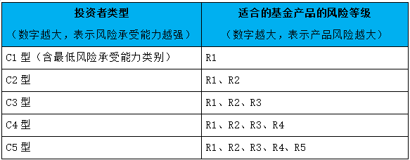

简介
股票
股票分红
原文: 【基础知识】股票分红是怎么回事，分红到底是亏了还是赚了？
整理自: 2022-01-25 17:54:27
什么是分红？
投资者购买一家上市公司的股票，对该公司进行投资，同时享受公司分红的权利，股票分红是上市公司在年终（年中）结算后，将盈利的一部分作为股利按股额分配给普通股股东的行为，一般有两种形式：派发 现金股利 和 股票股利，上市公司可根据情况选择其中一种形式进行分红，也可以两种形式同时用。
现金股利 是指以现金形式向股东发放股利，称为派股息或派息；
股票股利 是指上市公司向股东分发股票，红利以股票的形式到账，又称为送红股或送股。
另外，公司想要给股东分配红利须满足以下基本条件：
- 公司当年有税后利润；
- 已经弥补公司亏损；
- 已经提取10%的法定公积金；
- 最近三年以现金方式累计分配的利润不少于最近三年实现的年均可分配利润的30%。
当然还有一些其他复杂的条件和程序要求，这里就不赘述了。
股票分红为何要除权？
上市公司以 股票股利 分配给股东，也就是公司的盈余转为增资时，或进行配股时，就要对股价进行除权（XR），XR 是 EXCLUD（除去）RIGHT（权利）的简写。
上市公司将盈余以 现金股利 分配给股东，股价就要除息（XD），XD 是 EXCLUD（除去）DIVIDEN（利息）的简写。DR 表示当天是这只股票的 除息、除权日，D 为 DIVIDEN（利息）的简写，R 为 RIGHT（权利）的简写。
当一家上市公司宣布送股或配股时，在红股尚未分配，配股尚未配之前，该股票被称为含权股票。
要办理除权手续的股份公司先要报主管机关核定，在准予除权后，该公司即可确定股权登记基准日和除权基准日。
凡在股权登记日拥有该股票的股东，就享有领取或认购股权的权利，即可参加分红或配股。
A股 分红一般为两次，半年报和年报，年报分红居多。分红方式也是两种：现金 和 股票。
分红: 现金
现金分红很简单，分多少股价里面扣多少。这里有个误区是不要以为是直接送钱给你，而是把股票中本身含有的部分价值，折现给你，同时股价会下跌。
注意:
现金分红是要交个税的，基本原则是持有时间越长，交税越少：
- 持股一年以上，收红利的5%的税， (持股 >= 1年, 5% 个税)
- 持股低于一年超过一个月，收红利的10%的税，(1年 > 持股 >= 1月, 10% 个税)
- 持股不足一月，收取红利的20%的税。 (1月 > 持股, 20% 个税)
分红: 股票
我们经常听到 送转 ，其实还有一个派 。送转派 三个方式。很多人不理解为什么要分为三个词，送转都是给股票，派是给现金。
例如10转5送5派1,每10股给你10股，另派1元现金。
转和送的区别在于交税，转不缴税，送每股缴纳1元。
这里也有个误区是不要以为你股票多了你岂不是资金翻一倍？想得美，无论转送你多少股，除权后股价会按转送比例下调，10送10,20的股价第二天成10块。只不过你就是股票多了而已。
股票分红意义
- 只有真正盈利有保障，现金流稳定，债务可控的公司才能持续大比例分红。所以，通过分红能力，可以排除掉大量财务注水公司。
- 只要分红能力稳定，分红除权、股价变低的股票更有投资价值，所以会大概率填权。假设有一只可以每年稳定分红10元的股票，现价100元，分红率10/100；分红后，股价变90元，但依然可以每年分红10元，分红率10/90，显然更值得投资了。
- 当然，有些公司增长快，资金利用效率高，选择不分红。如果你能找到这样的公司，并且对自己的判断有把握，可以忽略高分红股票。
分红送股是利好还是利空?
很多股民以为分到的红利或者红股就是自己的纯获利，其实不然，因为股票分红后，交易所在权益登记日次一交易日(也就是除权除息日)会对该股票作除权除息处理，形成除权除息价，以保持股东持有该股的前后总权益不变。
分红前的持股市值 = 分红后的持股市值 + 现金红利【如遇除权除息价需四舍五入的，开盘前账户显示会与计算所得有出入，但不影响客户实际资产，因为开盘前的市值只是短暂的过度，后续行情还是按照实际计算所得的除权除息价变化的。】
就像前面提到过，上市公司分红是需要达到规定的盈利条件，从这个层面来看可以在一定程度上体现该公司的运营状况良好。另外，除权除息后，股价会变低，能增加流动性，对于一些之前盘桓在高位不敢下手的客户来说也不乏是一种机会。
所以，你选择除权除息前获利了结，我选择持有到分红以待后市填权获利，都是根据股民个人投资习惯和判断来取舍。
这些分红“套路”需要警惕
值得注意的是，一些上市公司虽有大比例现金分红，但多数现金最终都流进了大股东的腰包。部分高额现金分红的公司，偶尔分红之后，却面临亏损、无红可分的窘境。
经营较好的年份，为何吝于分红？分红政策为何会出现剧烈波动？深圳某私募人士分析称，通过对业绩、分红的调节，可以达到拉升、打压股价，或者为后续运作铺路，以往已经出现类似情形。但对于上述情况，不好过多猜测。
武汉科技大学教授董登新分析，现金分红有利于价值投资、长期投资，但分红要有均衡的节奏，不能忽高忽低，长期不分红、分红剧烈波动的，都要引起警惕，需要监管层加强监管力度，对相关公司的财务真实性加强监控。
如何挖到高分红潜力股？
对于投资者来说，股票属于绝对的高风险投资品种，需要警惕但股息的差异化税收，以及除息规则，否则，就会面临拿了红利仍然赔钱的处境。
“打铁还需自身硬”，投资者炒股需要“火眼金睛”，认清高分红潜力股的这5大特征：
- 高分红历史
“良心企业”都有良好的高分红历史，比如，双汇发展、华电国际、上汽集团 和 中恒集团 的分红率还呈现逐年递增的态势，其中 双汇发展、浙江永强、奥瑞金、华能国际 和 大秦铁路 历年平均分红率超过50%。
- 现金充裕，业绩稳定
现金资产相对充裕，未来现金收入可期，是公司维持高分红水平的基础。未分配利润较为充足，才能足以支撑高分红的预期。
- 资产负债率较低
负债水平不高，当公司现金充沛，毋须更多资金补充扩张的情况下，把钱通过高分红的形式分掉，就是合理的选择。
- 存实际控制人，第一大股东持股比例较高
从股东意愿角度来看，大股东的高持股比例是高分红的动力，大股东也实际拿走了分红的大部分收益。
- 国企或央企背景
这些公司相较其它公司，有为母公司推进国企改革提供资金的意愿，也有配合监管层鼓励分红、提高分红比率、加强A股价值投资取向的意图。
基金
系统性的了解基金基础知识、货币基金、债券基金、指数基金、基金定投等。
基金入门
“理财”这个词汇近几年在网络上悄然兴起，进而在社会上形成了一股热潮，突然意识到，这个时候需要理财，真的是你不理财，财不理你。但很多金融知识储备很少，很多理财知识都是从自媒体上学习，很多人只注重收益，却不懂得什么是风险，想赚钱，却不愿意承担过多的风险，希望得到专业的知识，却又不想花时间来学习。
本文将聊一聊投资基金前的一些 困惑、基金与其他投资种类的 区别、基金投资所需要的 心理素质、基金投资的 目标设定 等这几方内容。
投资前的困惑
为什么投资基金
CPI，也就是 居民消费价格指数，近两年每一年的CPI大约在 2% 左右，现在银行一年期存款利率只有 1.9% 左右。也就是说，普通老百姓如果靠存钱，资产不能增值，甚至购买力在下降，钱越来越不值钱。
通货膨胀 意味着货币贬值，货币贬值要求大家不能只是把钱存起来，应该尽可能的 将货币变为能增值的金融资产 。使得家庭资产 保值 甚至 增值 。通常来说，抵御通胀的手段有以下几种途径：
第一种，购买实物资产。房地产、黄金等都属于实物资产，这些资产都或许会因为通货膨胀而涨价，但是目前来看，国内房地产已经远不如几年前那么景气，未来投资预期很难判断。另外，实物资产有一个弊端，就是卖出变现相对较麻烦，例如现在您买个房子很简单，但想赚钱卖掉，有时候会出现有价无市的情况。
第二种，购买国债或银行理财，目前国债及银行理财的利息要高于银行存款利息，可以 实现资产保值增值，但这两款投资产品的收益率是有限的，不会有太大的惊喜，简单说，是个好的投资方式，但不会让资产升值太多。
第三种，基金投资，这个可能是适合绝大多数人的投资渠道，货币超发引发的通货膨胀会带动金融类资产跌的上涨，最明显的例子就是股市，很容易在未来成为投资房地产资金的去向。对于上班族来说，不具备专业的投资技能，也没有时间看盘，此时将资金交给专业的基金或者是一个很好的选择。
基金投资特点
想投资 基金，首先要了解什么是 基金，基金 就是指把一群人的钱集中起来，交给专业的基金经理来进行一系列的投资，基金经理会把钱投入到证券市场，为大家带来一定的投资收益。他具有以下特点：
- 专业投资，基金经理 利用其专业的知识对行业、公司进行充分的了解，选择优质的投资品种，选择合适的机会进行
买入、卖出，把握市场机会，为投资者带来收益。 - 多元化投资，也就是我们常说的资产配置，把鸡蛋放在不同的篮子里，基金经理在做投资的时候都是会采用
投资组合的形式，进行分散投资，比个人投资1-3只个股风险要小很多。 - 投资门槛低，本金是限制投资的主要因素，相比万元起购的理财产品，基金的
投资门槛很低，有的基金是1元起购，给资产量少的投资者带来了投资机会。 - 投资方式简单，也就是
节约时间成本，投资者大多数都是上班族，很少有时间去关心自己的投资品种，相对而言，基金省时省力，不需要投资者每天时时刻刻盯盘，节约了很多时间。 - 流动性好，基金的流动性非常好，也就是说买卖都是随时的，成交价就是当天收盘后的基金单位资产净值，买卖成功户，资金也会快速到账。
基金投资于其他投资方式的区别
市场上的产品与投资渠道很多，尽管基金是大众直接、简单的途径，但还是有很多人感到困惑，基金投资于其他投资方式有什么区别，下面给大家做下对比：
与股票投资相比
股票 是市场上最常见的投资品种，股票投资收益与风险都比较大，不一定适合普通投资者参与，如果将股票与股票型基金来对比，两者有以下区别，
基金 由专业人投资，采取组合投资等方式，降低了个人买卖股票的风险，收益也较股票来说稳定一些。
股票 是投资者自己去买，风险较大，收益也不像基金那样稳定。
与国债投资相比
国债 是固定期限，分为三年和五年，会根据不同的档次进行利息计算。
国债 和 储蓄 类似，利息稍微高一些，
而 债券基金 则是隔了一层，由基金管理人在 债券市场 操作，风险肯定大于国债，收益通常也会高于国债。
与银行理财相比
银行理财 目前已经成为大众投资的重要渠道，之前银行发行的产品大都承诺收益，让老百姓比较安心。
但未来这个现象会变的不一样，根据监管要求，现在的 银行理财产品 不允许承诺收益，意味着银行理财也会有风险。
两者具体区别是：
- 门槛不同，普通银行理财大多数五万起投，基金不同，1元起步。
- 收益风险不同，银行理财主要投资于
国债、货币等低风险品种，风险较低，收益也较低，基金可以投资债券、股票等等，风险较大，收益也会比较客观， - 期限不同，银行理财产品 大多数有
固定期限，基金比较灵活，随时申购、赎回。
基金投资者需要具备的心理
市场上将 股票投资者称为股民，将 基金投资者称为基民，那么一名合格的基民需要具备哪些心理素质呢。
合理理性投资
实践证明，冲动下做出的投资决策往往是会亏损的，投资品种不同，收益自然不同，购买了低风险的债券基金，自然不能期望它会带来20%的上涨，因此，理性看待涨跌，不盲从，选择适合自己的投资基金，不随波逐流。
资本市场变化无常，满仓搏杀的投资模式不可取，很容易失败。基金 可以通过正确投资让资产保值增值，但靠基金一夜翻倍暴富的可能性几乎没有。
数据证明，基金投资的资产是不影响自身生活开支的资产，满仓搏杀的投资者往往会适得其反，也会严重影响家庭生活开支。
长期价值投资
长期价值投资 对应的是 短期投机，基金不像股票，有很多高抛低吸的机会，基金短线投机频繁操作，是一种常见的错误心理。
有投资者很关心自己买的基金的涨跌，妄图以高抛低吸的操作，抓住市场每次波动的机会，从而实现快速积累财富的目的，这种心理其实是基金投资的大忌，因为 基金投资是需要长期投资的，基金投资了很多品种，不会因为单一市场、单一品种的变化而导致净值未来大幅变动，简单说其实本身不具备投机性。
投资者反复短线投机，非但不能为其带来超额收益，相反 高频投机操作会额外产生交易费用，增加大家投资成本。
基金投资要设定的目标
基金投资 是一种理财手段，既然参与，当然要为自己设定一个合理的目标，如此方能不忘初心。这个目标要设定为多少比较合适呢？根据实践经验，可以参考以下三点设定目标：
跑赢银行固定利息
银行存款是大家感觉最安全、最放心的投资方式，到现在大家都会把钱存银行，那么银行存款收益率如何呢？
我们以一年期定期存款为例，平均为 2%，有些商业银行略高于这个，最多也就是2.2%左右，大家可以将每一年做基金投资的 收益目标设定为高于银行存款利率。
超越通货膨胀率
通胀很好理解，假如你有100元人民币，今年通胀是2%，意味着100元只能买98元的东西，货币的购买力下降，让自己的财富无形中遭遇损失。
近几年，我们国家通胀率总体也在2%左右，但在前几年也到过3%左右，所以大家也可以将每年的 CPI作为基金投资的目标收益率。
超过市场平均水平
前面的两个目标，其实可以将是投资的基本目标，也可以这样讲，完成了前两个目标，也就达成了 保值 的目的，接下来最重要的是 增值，也就是要 超过市场平均收益。
想要做到这一点，除了 坚持长期价值投资 外，最重要的是要在众多基金中，选择优质的基金，让它帮助我们实现增值的目标。
每年市场总会有一些基金，可以比平均赚得多，我们可以找到他们，或者在不同基金之间配置不同的比例，也可以实现比平均赚的更多，当然这样都是有一定难度的，但并不是完全做不到，需要大家不停的学习，进步。
基金常识
“理财”这个词汇近几年在网络上悄然兴起，进而在社会上形成了一股热潮，让大家在衣食住行、柴米油盐酱醋茶之外，突然意识到，这个时候需要理财，真的是你不理财，财不理你。但很多金融知识储备很少，很多理财知识都是从自媒体行学习，很多人都只懂收益，不懂得什么是风险，想赚钱，却不愿意承担过多的风险，希望得到专业的服务，又不想花费很多时间来学习。想做好投资，必须要了解一些基金常识。
基金概念
基金管理公司
所谓 基金管理公司，简单说就是 在国家法律框架下，对各类基金活动进行管理的公司。
我国对设立基金公司的要求与审核很严格，相关部门制定了 《证券投资基金法》，对基金管理公司的各个方面都进行了详细的规范，旨在真正保护投资者的合法权益。可以这样理解，只要是在正规的基金公司参与投资的投资者，其权益都是受法律保护。
基金业协会 曾做过统计，现在我们国家有基金公司的数量已经非常庞大，最新统计，已经有160多家 基金公司。我们买基金，首选要选择一家信誉良好、业绩优秀的基金公司，只是面对这么对的公司，大家难以抉择，这边我给大家提供以下几个方面参考：
- 看基金公司的形象，一家真正优秀的基金公司一定会注重公司的形象、信誉、服务质量，因为它能从侧面反映公司的形象，有了良好的形象与口碑，不出现影响公司形象的负面新闻，投资者才会认同公司及旗下的产品。
- 看基金公司的规模及团队，首先我们要选择基金管理规模大的公司，其次要选择一个优秀投资团队的产品，如何选择一个优秀团队，这一点比投资本身还要重要。
- 基金公司的业绩表现，公司的历史业绩很重要，他能让我们了解这家公司过往是否为投资者赚过钱，如果一个基金公司投资管理制度完善，决策规范，那么他的投资相对比较严谨，历史业绩也会不错，这种基金公司值得考虑。
基金经理
所谓投资基金，主要看 基金经理，基金经理能力的强弱直接决定了投资者的收益。
现在市场上有很多明星基金经理，他们负责基金的具体投资，也形成了一定的品牌效应。
基金经理如同一只基金的灵魂，能够吸引大批资金的追随，最著名的例子就是2020年火爆互联网的张坤。
普通投资者在选择基金经理的时候，除了关注他的明星光环外，还应该从哪几方面考虑呢，判断基金经理优劣是一个很复杂的工程，这里只是简单的给大家举两个方面供参考。
- 看基金经理的择时能力，指的是基金经理在投资的时候对仓位的把控，
能力强的基金经理能在市场大涨前加仓、在大跌前减仓，或者在市场情况不好的情况下，将现金投入到债券市场，规避风险。如此一来，投资效率会更高，回报也会更好。但我们要说明的是，判断市场涨跌真的很难，如果基金经理能够做到在股票获利后及时了结，在股票下跌之前及时调整仓位，也就是说能够控制好基金净值的回撤，也就可以说这个基金经理的择时能力已经很强了。- 看基金经理的择股能力，所谓择股能力是指基金经理挑选股票的能力，这里包含两个因素，第一个是基金经理能否找到好的公司，第二个是能否在这个公司上面获得最大收益。
基金经理公司选的好，基金的业绩自然也就会好，那么怎么找到这样的基金经理呢？
太过专业的方式大家肯定是学不会的，这里给大家讲一个非常简单的办法，能够进行简单分析。
一看基金经理的
从业时间，稳定压倒一切，对于基金经理来说，从业时间越长，他的投资经验越丰富，尤其是经历过牛熊市场考验的基金经理，对于不同风格的市场变化由丰富的经验去适应。二是看基金经理管理的产品
盈利能力，看业绩，用业绩说话，尤其是考察基金经理在短期、长期不同阶段的盈利能力，比如在大盘下跌中是否抗跌，在牛市行情是否能超过指数收益。这个里面有一个指标，叫做四分位排名。三看基金经理的
回撤控制能力，国内市场向来牛短熊长，在牛市赚钱一般人都能做到，考验一名基金经理的能力最好的阶段是熊市，如何在市场低迷的阶段，能够比指数跌的少，比同类型的其他基金经理跌的少，是考验基金经理的主要因素，这方面大家可以查看基金经理所管理产品的回撤情况，在某一阶段的回撤与指数相比，与同类产品相比。
四分位排名是把同类的基金产品按涨跌幅大小来进行排序，然后分为四个等份，每一个部分大约含有四分之一的基金，基金按相对排名的位置高低分为：
优秀、良好、一般、不佳。可以说四分位排名是把基金涨幅数字化了，大家很直接的能够在软件上看到基金在某一阶段的表现。
基金规模
所谓 基金规模，指某个 基金公司 管理了多少资金，别小看了这个规模，这是选择基金很重要的指标，他 反应了基金公司在行业的地位，只有管理规范、信誉良好、服务优质，并能给投资者带来回报的公司才能收到青睐。口碑宣传下，大家也会愿意购买该基金的产品。
上面我们说的是 基金公司的管理规模，不是单只基金的规模，单只基金的规模并非越大越好，在选择具体基金的时候，还要综合其他因素来选择。
代销机构
代销机构 是指 第三方机构与基金公司签订了代销协议后，在自己的网点或者平台上进行产品销售。
传统的第三方机构，指银行、证券公司等，现在一些网络平台也可以成为第三方机构，比如支付宝，但大家需要注意的是，三方机构必须有基金代销牌照，才算合法经营，如果没有业务牌照，就不属于正规销售机构。
基金评级
随着基金市场规模的不断扩大及种类的不断增加，投资者已经很难深入了解到市场的全部，因此迫切需要有一个专业的第三方机构，对市场的基金产品做出一份客观公正的评价，投资者也可以据此做出投资决策，这就是 基金评级 产生的背景。
所谓 评级，就是 基金评级机构 通过分析手段，对市场的基金产品进行收益与风险的排名，让投资者了解自己投资某只基金后可能承受的风险，以及可能获取的预期回报。
在此只跟大家分享下，公募基金的评级，对于公募，美国晨星评级、国内的上海证券基金、天相投顾评级都算是比较权威的评级体系，能够分析判断基金未来的成长潜力。
每个基金产品的评级，大家都能在基金网或者基金介绍页面能看到，有一点提醒大家，评级结果只是一个参考，评级体系不同，每一家得出的结论自然不同。
基金种类
当大家准备去投资基金的时候，面对的第一个问题就是 基金种类，基金有很多种，如果选择一个适合自己的就变的非常重要，选对基金很关键。
按募集途径分类，一个是 公开募集，叫做 公募。一个是 不公开募集，叫做 私募。公募门槛低，1元起投，私募起点很高，而且面向特定投资者，起点很高。
按投资标的分类，简单说就是按基金买什么分类，大体上可以分为以下几类，
货币基金
这类基金主要是购买 国债、逆回购、银行票据等货币产品。
债券基金
这类基金会将资金的80%之上投入债券市场，包括国债、公司债等等，剩余20%资金做其他方向的投资。
如果只投债券，那就是纯债基金，如果还投其他市场，又称为偏债基金。
稳健 是债券基金的特点，但不代表债券基金是保本的，因为债券也有波动，债券基金也会有亏损的情况。
股票基金
这类基金会将资金的80%投入股票市场，这些基金的特征就是风险与收益都很大，因为股票型基金有股票投资的仓位限制，所以就算熊市，也可能不能降低太多仓位，就算不看好市场，也会亏损。
混合类基金
这类基金顾名思义，任何产品都可以投，债券、股票、货币等等。
指数基金
这类基金不投股票，而是将某一指数作为标的，通过买入很多个股来模拟这个指数的走势，例如沪深300指数基金、中证500指数基金等等，指数基金又分为 被动指数基金 与 增强型基金基金。
FOF基金
这类基金就是基金中的基金，FOF基金的 主要投资对象还是基金，也就是说FOF基金是去买其他基金，通过持有其他基金来获得投资收益。
基金常识
想做好投资，必须要了解一些基金投资常用术语。
交易术语
基金认购
投资者在 基金募集期间购买的基金份额叫做基金认购，简单说就是大家在 购买首发基金的时候，就叫做 基金认购。新基金认购一般都会有封闭期，在这个封闭期内，投资者是不能够卖出赎回的，因为基金经理一般都是在这个时间对基金进行建仓买入 股票、债券等。
基金申购与赎回
投资者买入基金的行为叫基金申购，卖出基金的行为叫做基金赎回，基金认购与赎回与股票的买卖意义是一样的。
基金申购又分为两种方式，分别是前端申购与后端申购.
前端申购指基金公司在投资者申购时扣除申购费用。
后端申购指投资者申购费率会随着投资者持有时间而递减，来鼓励投资者尽可能长期持有。
基金交易时间
基金的交易时间与股票是一致的，都在每个工作日的9点30——11点30，下午1点——3点。
需要注意的是 基金净值 以15:00收市为界，15点前下单的按当天净值算成交价，15点后下单的就按第二天交易日净值成交。
基金交易费用
基金交易费用是指基金交易时发生的费用，包括认购费、申购费、赎回费等等。
认购费
新基金发售，投资者进行认购时候交的叫做
认购费，通常认购费低于申购费，认购费是按照不同的认购资产收取，例如低于100万元为1.2%，100万——200万为1%，超过500万元收1000元一笔，也就是说认购金额越大，费用会越低。另外，新基金认购后，会有一定的封闭期，不能赎回，在这段期间，投资者是可以获得认购利息的，这部分资金通常会被 转化为认购的基金份额。
申购费
在基金存续期间，也就是大家 买老基金 的时候，向公司缴纳的手续费就是申购费，申购费与认购费一样会采取按金额不同，收取不同的费率，最低的一般为1.5%，有时候基金公司或者代销机构会进行打折销售，比如国泰君安证券就有一折基金，也就代表申购费会变成千分之1.5。申购费用相差10倍，是不是很给力。
赎回费
赎回费顾名思义就是当基金上涨后，投资者准备卖出了，卖出的时候给基金公司缴纳的手续费，赎回手续费一般不会按照资产来分档收取，而是按照投资者持有的时间来分档，比如投资者持有1年内会手续0.5%，持有1-2年会收取0.25%，当持有2年之上，免赎回费。
这也是为了鼓励大家长期持有，基金公司设立的赎回费率是持有时间越长，赎回费越低。
另外，大家还比较关心申购基金的时候，是选择A类还是C类。
A类 份额是前端收费，在申购时时收取申购费，赎回时收取赎回费。
C类 份额在申购赎回时都不收取费用，但在基金存续期内按日计提销售服务费。
总结一下就是 长期持有就买A类，短期持有就选择C类。
基金份额
基金份额, 也叫 基金单位, 就是投资人购买基金时得到或持有的数量单位，比如您买股票买了100股，基金称之为买了100份。
我们把基金比作某一个商品，净值 就是这个商品每天的单价，你想买1万块钱的这个商品，用总金额来除以单价得出你买入了多少份。
净值术语
基金单位净值
可以说基金的核心资产是 基金净值，基金投资就是围绕 基金净值 展开的，一切买卖交易都是为了基金净值的增长。
单位净值 就是指 基金总资产与基金份额的比值。
基金交易随时都在进行，每一次买卖都会造成基金份额的变动，但这个变动仅限于市场价格，结算时投资者需要一个客观公允的依据，这就是 基金单位净值 。
每天收市后，基金公司都会计算出基金产品的单位净值，单位净值可以比作股价，净值上涨 代表投资者的总资产也会上涨。
新成立的基金，单位净值 都是1元。假如过了一段时间后，基金的单位净值是
1.31元，即相当于每一份基金当前的价值是1.31元，我们是在1元净值时购买的。如果现在卖掉，市场会按照
1.31元进行交易，扣除原来购买的成本，投资者相当于每一份赚了0.31元，相当于赚取了31%的收益。
基金单位累计净值
累计净值 是指 该基金自成立以来所有的收益。
从累计净值上可以看出该基金历史上给投资者分过多少红利，因此累计净值更能准确地体现一只基金的赚钱能力。
我发现很多投资基金的朋友都患有“净值恐高症”，觉得这支基金净值已经很高了，没有了上涨的空间。其实，基金净值的高低并不是我们选择基金的主要依据。
我们要知道，基金净值高，不一定涨不动，反而代表基金经理管理得好。如果一支基金净值低，可能分红或拆分了，也有可能是一直以来表现都不好，并不代表可以抄底买入。
货币基金每万份收益
货币基金 的收益计算办法和一般开放式基金不同。
基金公司通常每日公布当日每万份基金单位实现的收益金额，也就是万份基金单位收益。
因为货币式基金的每份单位净值固定为1元，所以万份单位收益通俗地说就是 投资1万元当日获利的金额。
货币基金7日年化收益率
它是指 一个货币基金在过去7天内每一万份基金份额取得的净收益折算的年化收益率。
这个概念很好理解，假设某货币基金当天7日年化为3%，如果未来一年内都能是这个基准，那该基金一年的收益率就是3%，但例子只是个假设，7日年化是个短期的指标，只能将其作为一个参考。
基金分红
基金分红 是指 基金将收益的一部分以现金方式派发给基金投资人，这部分收益原来就是基金单位净值的一部分。人们平常所说的基金主要是指 证券投资基金。
基金分红 主要有两种方式：一种是现金分红，一种是红利再投资。
根据 《证券投资基金运作管理办法》，若投资者未指定分红方式，则默认收益分配方式为 现金分红。投资者可以在权益登记日之前去您购买基金的机构处进行分红方式的修改。
例如
持有一基金
10万份，现每基金份额分红0.05元：假设选择 现金分红 方式，那么基民可以得到
0.5万元的现金红利；假设选择 红利再投资 方式，分红基准日基金份额净值为
1.25元，那么，基民就可以分到5000元÷1.25元/份=4000份基金份额，基金份额就变为10.4万份。
开放式基金默认的分红方式为现金分红，但基民可以根据个人的具体情况以及基金行情的变化自主更改。
指数基金
投资取胜的关键就是要选择合适自己的基金，基金种类很多，且特点各异，充分了解每一种基金的优劣是必须要做的功课。
近年来，指数基金因其简单好懂，成本低廉，不依赖于单只公司等诸多优势，而成为投资者最青睐的工具之一。那么什么是指数基金？
什么是指数基金
指数基金 指 以特定指数为标的，以指数成分股为投资对象，通过购买指数全部或者部分成分股构建一个投资组合，跟踪指数的表现的基金产品就叫做指数基金。
指数基金投资 的出发点就是复制相关指数走势，根据复制程度的不同，可以分为 被动指数基金 与 指数增强基金。想了解指数基金，首先要了解什么是指数。
什么是指数
指数 指 股票价格指数，按一定选股规则，选出代表性的股票，来编制计算，反应这些股票的平均价格走势。
例1
一个班主任想了解本班学生的学习水平，就可以把班里所有学生某次考试的成绩平均计算，得出的就是班级平均水平。
如果老师想了解这个班级优等学生的水平，班主任就可以把其中考的好的学生成绩进行平均计算，这相当于就是指数编制计算，得出的平均分就是指数。
例2
沪深300指数 是 按市值规模选择上交所、深交所上市最靠前的
300家公司，这300家公司覆盖了沪深市场60%的市值，非常有代表性。在交易软件上，我们就可以输入
000300，就可以看到 沪深300指数 的实时行情。除了 沪深300指数，市场还有很多种指数，比如 中证医药指数 这种
行业指数。
指数基金的特点
指数基金 的投资标的是指数成分股，因此属于股票型基金，但与普通股票基金又有很多区别，有自己很多特点：
指数长期跟国家发展一致
巴菲特说过，大部分投资者最后都会发现最好的投资方法就是购买低成本的指数基金，指数基金 代表了 某些指数或者某些行业，买入指数基金，其实就是看好自己国家经济的发展，相信国家未来的发展前景，相对于买入单只股票投资，远不如买入指数基金来投资国运更可靠。
交易成本低
指数基金 费用低体现在 管理费用 与 交易成本 两方面，不用主动投资，管理费用自然比其他基金要低，交易申购赎回费等，指数基金一般申购费在1%，低于普通股票基金，赎回费与持有时间有关系，大于两年，基本上不收取费用。
风险分散
指数基金 样本股选择多行业、全覆盖，属于 广泛分散投资策略，所以 单只股票的波动对基金整体业绩影响比较小，另外，指数基金是跟踪指数，指数的走势往往比个股更容易判断。
指数基金 有缺点吗，当然也有。指数基金很明显的缺点就是波动不大，指数基金跟指数一样，相比个股或者一些股票基金来说，波动率很小，不适合短线交易性投资者。
指数基金的分类
行业指数基金
行业指数很好理解，成分股就是行业，比如刚才我们举例的医药行业指数基金，还有消费行业指数基金等等。
当然还可以根据某个主题概念来编制指数，例如军工行业指数、互联网行业指数、养老行业指数等。
每个行业的盈利能力是不一样的，所以导致每个行业指数的走势也有所不同。
近十年，A股经历了多轮牛熊，数据来看，医药行业与消费行业的赚钱能力最强，这两个也都被称为可以穿越牛熊的行业，其余有些周期性行业，受经济周期影响比较大，或者某些行业受利空事件，比如白酒的塑化剂、奶粉的添加剂等事件，也会大幅下跌，波动也更大。
宽基指数基金
市场是最常见的 宽基指数 是上证50指数、沪深300指数、中证500指数，创业板指数。
宽基指数最大的优势就是包含各行各业，选取的都是质量高的公司，也就代表行业的盈利也会更加稳定，投资回报也会更稳健。
从长期投资的角度，更鼓励大家去关注宽基指数基金，它能反应出整个市场的平均收益，也更适合投资者定期投资。
当然，配置 指数型基金 的意义就是获取市场平均收益，不能买入很多相似走势的指数基金，这样就失去了配置的意义，可以以宽基指数为主，再配置适当阶段性看好的行业指数基金或者指数增强基金。
指数增强型基金
大家都应该知道，我们A股市场的波动率是比较大的，也就是说涨跌幅度大，散户投资者多，容易追涨杀跌，也就导致指数型投资在牛市的时候涨幅会低于平均水平，或者说在震荡市的时候，投资者希望比指数能多赚一些，在这个背景下，指数增强基金就出现了。
指数增强基金更依赖基金经理的主动判断，不完全按照指数的成分股进行复制投资，而是通过量化操作的方式，在部分复制指数走势的前提下，去追求获得超过指数的收益，寄希望与涨的比指数多一点，跌的时候比指数少跌一点。指数增强基金 按规定只要求80%的仓位从指数成分股去选取，所以给了基金经理很大的空间去做增强收益。
如何选择指数基金
目前市场上指数基金越来越多，如何选择成了一个非常重要的问题，投资者可以简单参考以下几个维度
如何挑选一个宽基指数基金
- 选 宽基指数 风格，宽基指数主要有两类，分别是
价值和成长，大盘和小盘，其中 大盘股 最有名的就是沪深300价值指数，中小盘股 有中证500、1000指数、创业板指数、双创指数等。 - 该指数基金拟合所跟踪的指数是否精准。这是评价 指数基金 的一个最核心的标准。优秀的 指数基金 的涨跌和它所跟踪的 指数 应该完全重合。这样基金的收益就直接与跟踪指数相关，投资人只需关注 指数 的上涨与下跌，就可以合理的控制盈亏比例。
- 该指数基金的费率是否低廉。一般来说，由于 指数基金 不涉及
股票选择和分时才做，所以费率一般较低。目前 指数基金 的管理费包括两个方面：交易费用和管理费用，交易费用包括申购费和赎回费。管理费用包括基金管理费和托管费。 - 该指数基金规模、基金经理的从业时间。基金规模太小，抗风险能力差，太大也不好，一般选择
5-50亿的最好，不过一些优秀的放宽一点。好的基金经理很重要，选择的标准一般是：从业5年之上最佳。
以上就是如何挑选 宽基指数基金 ，对于希望获得一定超额收益的投资者来说，该行业增强型的 指数基金 相对更值得考虑。
如何挑选一个行业指数基金
- 选 行业或者主题指数，“男怕入错行，女怕嫁错郎”，如果选择了一个不适合自己的行业，很有可能几年下来，一事无成。如果不做宽基的指数，想投 行业指数基金，选择好的
朝阳行业及受经济周期影响比较小的行业尤其重要，比如消费、医药等行业都是不错的长牛行业。 - 选择 在该行业的低估值的时候投资，行业与股票一样，也有
估值一说，简单说投资的性价比，如果该行业目前处于高估值状态，这个时候其实就不值得投资，如果该行业处于低估值，投资更具有性价比，估值的判断是一个难度非常大的事情，市面上有很多种估值方法，大家在买基金的时候都能在软件上查询到目前行业的估值情况，投资 行业指数基金 前一定要关注下行业的估值。
后面的方法与刚才我们提到的宽基指数投资方法差不多，还要继续去看该基金模拟指数的误差、基金的收费、基金规模、基金经理等等。
总结
配置指数基金是一个非常简单、有效的方式，配置 指数型基金 的意义就是获取市场平均收益。
首先 不能买入很多相似走势的指数基金，这样就失去了配置的意义。
然后 不能在行业高估值的时候买入，要在行业低估值的时候定期投资。
可以 以宽基指数为主，再配置适当阶段性看好的行业指数基金，如果对 宽基指数 带来的收益不满意也可以适当将指数基金改为配置指数增强基金。
债券基金
如果你只想进行低风险的理财配置，那么低风险的债券基金是一个不错的选择。
什么是债券
提到 债券基金，一定先说 债券，所谓 债券 就是各类机构面向社会筹措资金时，向投资者发行的、承诺按一定利率支付利息并到期偿还本金的债权债务凭证。我们通常说的 债券 指的是 国债 以及上市公司发行的 高信用等级 的 信用债。
什么是债券基金
顾名思义，专门投资于债券的基金，就是 债券基金，按监管要求，80%之上资金投资于债券的基金才成为债券基金，债券基金主要投资对象就是各类国债、不同类型的金融债、企业债。由于有固定的利息汇报并能到期还本，相比股票基金来说，债券基金具有稳定、风险较低的特点。
债券的种类
国债
国债包括1年期内的短期债，1-10年的中期债、10年之上的长期债，因为有国家信用担保，国债信用风险极低，可以说基本上都会兑付，收益率大约在2%—4%之间。
信用债
信用债 顾名思义，没有任何资产作为担保，债券的发售完全建立在债权人对借债主体信任的基础上，风险大，收益相对也更高。中高等级信用债是指信用评级在AA级之上，违约的风险相对较小，评级在这个级别之上的大多数是大型企业，资金实力比较雄厚，投资者对这种公司有信任才会认购公司发的债券。一般来说，信用评级越高，信誉度也就会更高，违约风险越小。
可转债
可转债，做股票的朋友肯定不陌生，是上市公司发行的一种可转换债券，债券一般期限不到5年，流动性好，可以直接在股票市场上买卖交易，债券基金可以通过购买可转债，来获得价差，增强基金收益。
债券基金的分类
按投资方向不同，可以划分三个类型。
纯债基金
这种基金只能将资金投资于债券市场，不能投入其他市场。
非纯债基金
非纯债基金 还可以把资金的20%拿出来去购买非债券产品，也就是大家还经常听说一级债基与二级债券。
这个也很好理解:
一级债基代表基金可以参与新股申购与个股增发、可转债。
二级债券可以购买股票或者可转债。
在市场好的时候，非纯债基金的优势就会体现出来，因为可以配置一少部分的股票或者可转债，就收益来看，取得的回报肯定会大于纯债基金，但权益市场不好的时候，收益也会比不过纯债基金了。
可转债基金
可转债基金 其投资的标的主要是可转债与可交换债，如果遇到股票市场行情上涨，可转债价格也会上涨，那么可转债基金也会获得超额收益。
简单总结下，如果说风险与收益是相对的，那么这几种类型的风险收益比是，可转债基金 大于 二级债基 大于 一级债基 大于 纯债基金。
债券基金的费用
同其他基金一样，债券基金也有申购赎回费、管理费等等，一般债券基金分为A\B\C三类，分别代表不同的收费方式，A类为前段收费，B类为后端收费，C类为无申购赎回费收取销售服务费。
投资者可以根据自己投资期限来选择不同的品种，简单说短期买卖选C，长期小资金选B，大资金选A类。
债券基金的收益来源
很多投资者会问，债券基金的怎么赚钱的呢，一般来说有以下几个收益来源。
票息收益
这个是 债券基金买债券的主要收益来源，所谓 票息收益 就是 债券持有到期所获得的利息收入。
假设一个基金持有一张债券，面值为100元，三年前，票面利息是每年4.9%，那么基金持有这一张债券的收益就是100*3*4.9%=14.7元。
债券价差收益
债券价差收入，债券交易主要是在银行间市场与交易所，受市场利率、流动性等影响，债券价格是在波动的，波动就有价差，当然债券主要靠基金经理的运作来获得。
权益市场投资收入
二级债基 可以投资股票、可转债等等，也就是可以通过股票投资增厚收益，一般来说基金会根据股票市场的行情调整股票投资占比，获得股票上涨的收益。
债券基金的风险
债券基金投资也有风险，除了债券（股票）价格涨跌的风险外，还有债券的信用风险。
如果这个债基持有的债券，债务人不能及时还钱，那么基金收益肯定会收到影响。这几年大家也能听过一些债务违约新闻，现在机构对地方政府、企业发行的债券都会持怀疑态度，特别是公司发的债券，很多公司表面经营状况不错，但不排除出现突发事件导致财务状况恶化的结果。
债券基金的优劣势
优势
- 分散持仓，分散风险
- 流动性好：急用钱直接卖就可以
- 持有成本是相对于股票基金来说比较低。
- 收益稳健，波动小，对于一些追求稳健回报的投资者来说，债券基金是不二之选。
劣势
- 债券基金具有
回报率低、波动小的特点。这决定了债券基金一直是小步慢跑的姿态，短期内难以获得相对满意的收益。 - 股票牛市时会大幅跑输股票基金，拉长时间来看，债券基金能实现年化4%的收益，但在股票牛市中，债券基金 `真的连股票基金的陪跑选手都算不上。
如何选择债券基金
债券基金波动比较小，所以在自己投资的资产组合里加入债券类资金，能降低我们投资组合的波动。
- 选大基金公司的债基产品。
- 看基金的 成立时间和规模：成立时间太短，说明运作还没有稳定，业绩没办法评估。
- 看基金的 历年的收益率：因为这是一只激进的保守型基金，所以看它的最高收益和最低收益非常重要。激进，看它有没有 超越市场平均水平。保守，看股市、债市暴跌时，它的最低收益是多少。这样能对比出其中的风险和预期收益。
- 看基金经理的 变动情况。基金经理经常变动，不建议选择。因为业绩得不到保证。
- 看费率：费率太高，持有成本就高，最好比较一下，选费率低的，节约长时间投资的成本。
总结
债券基金的
收益率和风险（年化波动了、最大回撤）都小于股票基金。其中 二级债基金 配置了不高于
20%仓位的股票，收益和风险均有一定程度放大。所以，债券基金比较适合那些追求稳健回报的低风险偏好投资人。
此外，债券基金可以有效平滑投资组合的收益曲线，降低回撤。
债券基金 在资产配置中是不可或缺的一项，很多投资者会把自己资产的一部分来买入
债基，这样获得一定稳定的收益。一部分来买股票基金，来增强收益。想购买债基的朋友，可以打开
国泰君安君弘APP，在理财栏目找到基金页面，选择里面的人气债基，了解即可。
- 基金理财二十问
- 1.公募基金是什么？
- 2.基金有哪些优势？
- 3.基金有哪些分类？
- 4.混合型基金如何进一步区分？
- 5.基金还分主动型、被动型？有什么区别？
- 6.基金有风险吗？
- 7.我适合购买哪一类基金？
- 8.我要去哪里买基金？
- 9.买卖基金时的价格是多少？
- 10.买了基金后我在哪里可以看到净值和定期报告？
- 11.赎回后我的资金何时到账？
- 12.基金名称里的 “封闭” “定期开放” “**年/个月持有” 有什么区别？
- 13.为什么买基金时有的是 “认购”、有的是 “申购”？有什么区别？
- 14.基金名称后跟着的A、C等字母代表什么？有什么区别？
- 15.什么叫做定投？
- 16.什么是基金分红？基金分红对基金投资有何影响？
- 17.基金转换是什么？
- 18.什么是LOF？
- 19.什么是ETF、ETF联接？
- 20.什么是FOF？
原文:
- http://www.xinhuanet.com/finance/2021-06/02/c_1127520901.htm
- http://www.xinhuanet.com/finance/2021-06/02/c_1127520905.htm
- http://www.xinhuanet.com/finance/2021-06/02/c_1127520922.htm
基金理财二十问
1.公募基金是什么？
公募基金 的全称是 公开募集证券投资基金，公募基金通过发售基金份额，将众多不特定投资者的资金汇集起来，形成独立财产，委托 基金管理人 进行投资管理，基金托管人 进行财产托管，由 基金投资人 共享投资收益、共担投资风险。
公募基金 在发达国家已有上百年历史，在国内的发展也超过20年，其独特的制度优势促使其不断发展壮大，在金融体系中的地位和作用也不断上升。
2.基金有哪些优势？
（1）集合理财、专业管理
一方面，基金汇集众多投资者的资金，积少成多，有利于发挥资金的规模优势，降低投资成本；另一方面，将资金交给 基金管理人 管理，使中小投资者也能享受到专业化的投资管理服务，基金管理人一般拥有专业的投资研究人员团队、丰富的信息资料和研究资源，能够更好地对证券市场进行动态跟踪与深入分析。
（2）组合投资、分散风险
中小投资者由于资金量小，通常无法购买数量众多的股票来分散投资风险。基金以 组合投资 的方式进行投资运作，通常会购买几十种甚至上百种股票，投资者购买基金就相当于用很少的资金购买了一篮子股票。在多数情况下，某些股票价格下跌造成的损失可以用其他股票价格上涨产生的盈利来弥补，因此可以充分享受到组合投资、分散风险的好处。
（3）严格监管、规范透明
为切实保护投资者的利益，各国(地区)基金监管机构都对证券投资基金业实行严格的监管，对各种有损于投资者利益的行为进行严厉的打击，并 强制 基金进行及时、准确、充分的信息披露。
（4）独立托管、保障安全
基金管理人只负责基金的投资操作，并不参与基金财产的保管，基金财产的保管由独立于基金管理人的 基金托管人 负责。这种相互制约、相互监督的制衡机制为投资者的利益保护提供了重要的保障。
3.基金有哪些分类？
按照《公开募集证券投资基金运作管理办法》的规定，根据基金投资标的和投资比例的不同，基金有以下类别：
（1）80%以上的基金资产投资于股票的，为 股票型基金；
（2）80%以上的基金资产投资于债券的，为 债券型基金；
（3）仅投资于货币市场工具的，为 货币市场基金；
（4）80%以上的基金资产投资于其他基金份额的，为 基金中基金（即 FOF）；
（5）投资于股票、债券、货币市场工具或其他基金份额，并且股票投资、债券投资、基金投资的比例不符合第（1）项、第（2）项、第（4）项规定的，为 混合型基金。
不同类的基金风险和收益不同。股票型基金的风险较高，但预期收益也较高；债券型基金的波动性通常要小于股票基金；货币市场基金具有风险低、流动性好的特点；混合型基金的风险低于股票型基金，预期收益则要高于债券型基金。
4.混合型基金如何进一步区分？
混合型基金 关于投资比例的规定相对灵活，实践中可以结合基金投资运作特点，按照股票比例的不同，把混合型基金进一步细分为：
（1）偏股混合型基金：基金合同中约定投资于股票的资产占基金净值60%以上；
（2）偏债混合型基金：基金合同中约定投资于债券的资产占基金净值60%以上，或者约定投资于股票的资产占基金净值不超过40%；
（3）平衡混合型基金：基金合同中约定投资于股票的资产占基金净值的比例一般在30%-80%之间，从实际运作和投资策略看，此类基金长期股票投资比例在40%-60%；
（4）灵活配置混合型基金：基金合同中约定投资于股票的资产占基金净值0%-95%之间。投资者可以参考业绩比较基准，或者基金实际组合情况来了解此类基金的风险收益特征。
理论上 投资股票比例越高，其风险和预期收益水平也越高。
投资者在购买基金产品前，需要对自己投资的基金有所了解，尤其要了解基金的 投资范围（如 股票、债券、货币市场工具、商品 等）、投资比例（如投资于股票、债券的比例等）、投资方法（如主动、被动、量化等）等等，同时充分认识自身的投资目标、投资期限、投资经验、风险承受能力等因素，选择和自身偏好及风险承受能力相匹配的基金进行投资。
5.基金还分主动型、被动型？有什么区别？
根据投资理念可以将基金分为 主动型基金 与 被动型(指数)基金。
主动型基金 是一类力图取得超越基准组合表现的基金。
被动型基金 并不主动寻求取得超越市场的表现，而是试图复制指数的表现。
被动型基金 一般选取特定的指数作为跟踪的对象，因此又被称为 指数基金。以股票指数基金为例，它投资于某一股票指数所包含的全部或者一部分股票，追求达到与该股票指数相近的收益水平。近年来发展很快的 ETF（交易型开放式指数基金），一般采用被动式投资策略跟踪某一标的市场指数，因此属于指数基金。
6.基金有风险吗？
由于 基金主要投资于股票、债券等资产，而这些资产的价格是波动的，因而基金投资有风险。基金不同于银行储蓄，当您购买基金产品时，既可能按持有份额获得基金投资所产生的收益，也可能承担相应带来的损失。
您在做出投资决策之前，请仔细阅读 基金合同、基金招募说明书 和 基金产品资料概要 等产品法律文件和风险揭示书，充分认识基金的风险收益特征和产品特性，认真考虑基金存在的各项风险因素，并根据自身的投资目的、投资期限、投资经验、资产状况等因素充分考虑自身的风险承受能力，在了解产品情况及销售适当性意见的基础上，理性判断并谨慎做出投资决策。
7.我适合购买哪一类基金？
投资者应当在了解产品或者服务情况，听取基金募集机构适当性意见的基础上，根据自身能力审慎决策，选择风险适配的基金产品。
基金产品的风险等级按照风险由低到高顺序，至少划分为R1、R2、R3、R4、R5五个等级，等级越高风险越大。
基金募集机构会以纸质或者电子文档形式提供风险测评问卷，对普通投资者的风险承受能力进行测试并分为 C1、C2、C3、C4、C5五种类型，数字越大表示风险承受能力越强。
根据普通投资者风险承受能力和基金产品的风险等级，进行适当性匹配：

8.我要去哪里买基金？
公募基金 由 基金管理人 以及取得 基金代销业务资格 的其他机构（简称代销机构）进行销售。
基金管理人 即指基金公司，具有代销资格的机构主要包括：商业银行、证券公司、期货公司、保险公司、证券投资咨询机构、独立基金销售机构等等。需注意 并不是每家代销机构都代销市场上所有基金。
投资者可以登录基金公司的官网、APP购买该公司管理的基金，也可以通过代销机构的官网、APP查询和买卖基金。
9.买卖基金时的价格是多少？
对于认购而言，通常是以1元/份的初始面值进行认购。
对于申购或赎回而言，投资者在申购和赎回基金时通常不能即时获知买卖的成交价格，申购、赎回价格只能以申请当日收市后计算的基金份额净值为基准进行计算，即按照“未知价”交易原则成交（每日按照面值进行报价的货币基金除外）。
10.买了基金后我在哪里可以看到净值和定期报告？
投资者可通过原购买基金的销售机构或者基金公司官网查看基金的净值以及自己账户的资产状况。
基金公司应按规定披露基金的定期报告（季报、中报和年报等）。投资者可通过规定网站、规定报刊或基金公司官网查阅这些报告。
11.赎回后我的资金何时到账？
基金赎回 需要一定的清算时间，资金到账时间的长短通常跟基金类型相关，通常如下：
货币市场基金：投资者赎回申请成功后，基金管理人将指示 基金托管人 按有关规定将赎回款项于T+1日从基金托管账户划出，经销售机构划往投资者银行账户。
QDII、FOF：投资者赎回申请生效后，基金管理人将在T＋10日（包括该日）内支付赎回款项。
其他类型基金：投资者者赎回申请生效后，基金管理人将在T＋7日（包括该日）内支付赎回款项。
12.基金名称里的 “封闭” “定期开放” “**年/个月持有” 有什么区别？
一般情况下，开放式基金在交易所正常交易日均可办理申购和赎回（新基金成立后通常会有不超过3个月的封闭期，在这段时间内无法赎回）。
“封闭” “定期开放” “**年/个月持有”均是对基金运作方式的描述。“封闭” 表示在基金合同期限内不开放申赎；“定期开放” 表示定期开放申赎；“**年/个月持有” 表示开放申购但投资者购买的每份基金份额须满足最短持有时间要求后才能赎回。
（1）写明 “封闭” 的基金，在封闭运作期内无法申购、赎回、转换转出。
（2）写明 “定期开放” 的基金，运作期可以分为 “封闭运作期” 和 “开放运作期”，在封闭运作期内无法申购、赎回、转换转出；每个封闭运作期结束后，进入开放运作期，在开放运作期内可以申购、赎回、转换转出。
（3）写明 “**年/个月持有” 的基金，正常开放日可以申购，但对每一基金份额设定最短持有期限。即对每份基金份额，当投资者持有时间小于最短持有期限，则无法赎回或转换转出；当投资人持有时间大于等于最短持有期限，则可以赎回或转换转出。
13.为什么买基金时有的是 “认购”、有的是 “申购”？有什么区别？
认购和申购都是指购买基金的行为。
认购是在基金募集期内购买基金份额的行为，俗称 “购买正在发行期的新基金”；
申购是在基金合同生效后，申请购买基金份额的行为，俗称 “购买老基金”。
基金认购与基金申购的 区别 在于：
（1）认购是在基金募集期间购买，申购是在基金合同生效后购买；
（2）通常情况下，投资者的 认购申请一经受理不允许撤销，但 申购申请可以在基金合同及销售机构规定的时间内撤销；
（3）认购通常是按1元/份的初始面值进行认购，而申购通常遵循 “未知价” 原则，即申购价格按申请当日收市后计算的基金份额净值为基准进行计算（每日按照面值进行报价的货币基金除外）；
（4）认购份额要在基金合同生效时确认，并且通常有封闭期；而申购份额通常在T+3日之内确认，确认后可以按照基金合同约定进行赎回。
14.基金名称后跟着的A、C等字母代表什么？有什么区别？
基金名称后缀的A、C等字母表示基金的不同份额类别。不同基金份额类别的资产一起合并投资运作，风险收益特征并无实质差别，它们主要差别是费率结构不同。
一般情况下，A类份额收取认/申购费，不收取销售服务费；C类份额不收取认/申购费，收取销售服务费。认/申购费为一次性费用，一般在购买基金时从申购金额中扣除；而销售服务费每日计提，按照基金合同约定频率从基金资产中支付。
投资者在购买基金时，可在购买渠道查看产品费率说明，根据自己投资期限及具体基金的费率，计算比较购买A类份额还是C类份额更为合适。
15.什么叫做定投？
定投，一般指定期定额投资业务，投资者可向销售机构提交申请，约定每期扣款时间、扣款金额，销售机构在每期约定扣款日自动完成扣款，并提交基金申购申请。
定期定额投资 是引导投资者进行长期投资，平均投资成本的一种投资方式。投资者应充分了解基金定期定额投资和零存整取等储蓄方式的区别，定期定额投资并不能规避基金投资所固有的风险，不能保证投资者获得收益，也不是等同于储蓄的理财方式。
16.什么是基金分红？基金分红对基金投资有何影响？
基金分红是指在符合有关基金分红条件的前提下，基金管理人根据基金可供分配利润等实际情况，按照基金合同约定向基金份额持有人进行收益分配。基金进行分红会导致基金份额净值下降，但对投资者的利益没有实际影响。
基金分红有两种方式：现金分红和红利再投资。
现金分红指投资者直接获得现金的分红方式。
红利再投资，也称分红再投资转换为基金份额（部分销售机构可能显示为 “红利转投” ），是指投资者选择将所获分配的现金收益，按照基金合同有关基金份额申购的约定自动转为基金份额形式进行再投资。
根据《公开募集证券投资基金运作管理办法》规定，封闭式基金的收益分配，每年不得少于一次，封闭式基金年度收益分配比例不得低于基金年度可供分配利润的百分之九十。开放式基金的收益分配，由基金合同约定。基金收益分配应当采用现金方式，但中国证监会规定的特殊基金品种除外。开放式基金的基金份额持有人可以事先选择将所获分配的现金收益，按照基金合同有关基金份额申购的约定转为基金份额；基金份额持有人事先未做出选择的，基金管理人应当支付现金。
投资者可以根据自己的意愿，通过原购买基金的销售机构修改分红方式。
（提示：少数基金只有一种分红方式，具体可通过基金合同了解）
17.基金转换是什么？
基金转换 是基金管理人向投资者提供的一种服务，指基金份额持有人按照基金合同和基金管理人规定的条件，申请将其持有基金管理人管理的、某一基金的基金份额转换为同一基金管理人管理的其他基金的基金份额的行为。
基金转换 将投资者持有的基金份额直接转换成同一基金公司管理的其他基金的基金份额，比起常规的 “先赎回再申购”，可以减少操作步骤、节省了等待赎回款项到账的时间。
由于不同基金的申购费率可能不同，如果转入基金的申购费率高于转出基金的申购费率，一般应在转换时补齐差额；但如果转入基金的申购费率低于或者等于转出基金的申购费率，就不需要再次支付申购费了。虽然基金转换常常还收取一定的转换费用，但由于不需要先赎回再去申购，综合费用仍较低。
因此，投资者如果想将持有的基金换成同家基金公司管理的另一只基金，可以按照规定的条件，选择办理基金转换业务（具体基金能否办理转换及转换的规则，请详阅基金合同、基金管理人及销售机构的规定）。
18.什么是LOF？
LOF，“Listed Open-Ended Fund” 即上市开放式基金，它是我国对证券投资基金的一种本土化创新。LOF 既可以通过基金销售机构进行基金份额申购或赎回，又可以通过证券账户在交易所进行基金份额申购或赎回，还能够在交易所像买卖股票一样进行基金份额交易。
LOF 可以是指数基金，也可以是主动管理基金。
19.什么是ETF、ETF联接？
ETF：“Exchange Traded Fund” 即 交易型开放式指数基金，是指以某一选定的指数（标的指数）所包含的成份证券（股票、债券等）为投资对象，依据成份证券的种类和比例，采取完全复制或抽样复制，进行被动投资的指数基金，以实现对标的指数的紧密跟踪。我国首只ETF——上证50ETF就是完全复制上证50指数进行投资。
ETF 具有独特的实物申购、赎回机制，这也是ETF与 普通指数基金 的最大区别。投资者申购 普通指数基金 是以现金进行申购，并根据基金份额净值采取 “金额申购、份额赎回” 的原则，赎回时也是获得现金；而ETF采取 “份额申购、份额赎回” 的原则，投资者根据基金公司每日公布的PCF清单（申购赎回清单）中指定的一篮子证券来申购，赎回时得到的也不是现金，而是相应的一篮子证券（部分ETF可以采用全部或部分现金替代模式进行申赎）。因此，ETF的运作机制和申赎规则比普通指数基金更复杂。
此外，ETF的申购赎回有一定的门槛限制，投资者需按基金合同和基金招募说明书规定的最小申赎单位或者其整数倍进行申报（每只ETF的最小申赎单位不尽相同，具体可查阅相关基金的招募说明书），但 ETF的场内交易没有上述门槛限制，开立证券账户后就可以像买卖股票一样进行ETF份额的买卖交易。
投资者投资于ETF前须认真阅读证券交易所、登记结算机构和基金招募说明书中关于ETF 的申赎、交易及结算相关业务规则及其不时的更新，并在充分了解相关风险的前提下审慎参与。
ETF联接基金 是指将绝大部分（通常情况下不低于90%）基金财产投资于跟踪同一标的指数的ETF（即目标ETF），并采用开放式运作方式的基金。ETF联接基金与目标ETF的投资目标类似，紧密跟踪标的指数表现，追求跟踪偏离度和跟踪误差最小化。
对于无法开立场内证券账户的投资者，ETF联接基金提供了一种间接投资于目标ETF的方式。目标ETF作为一种特殊的基金品种，可将全部或接近全部的基金资产，用于跟踪标的指数的表现；但ETF联接基金作为普通的开放式基金，需将不低于基金资产净值5%的资产投资于现金或者到期日在一年以内的政府债券，所以ETF联接基金与目标ETF在业绩表现上可能存在差异。
20.什么是FOF？
FOF 的英文全称为 “Fund of Funds”，即 “基金中基金”。公募FOF将80%以上的基金资产投资于经中国证监会依法核准或注册的公开募集的基金，这类产品的基本特点是将大部分资产投资于“一篮子”基金，而不是股票、债券等金融工具。
FOF 挑选多只基金进行组合配置，可以进一步分散风险，我国首只公募FOF基金成立于2017年。
FOF 既可以投资于基金管理人自身管理的其他基金，也可以投资于其他基金公司管理的基金。对投资于基金管理人自身管理的其他基金的情况，FOF具有避免双重收费的机制：基金资产中持有的自身管理的其他基金部分，不收取FOF的管理费；FOF管理人申购自身管理的其他基金（ETF除外），应当通过直销渠道申购且不收申购费、赎回费（按照规定记入基金财产的赎回费用除外）、销售服务费等销售费用。
EFT基金精要
原文: https://zhuanlan.zhihu.com/p/120930639
简介
ETF 全称是 Exchange Traded Funds，ETF 中文是交易型开放式指数基金或交易所交易基金。港澳称为交易所买卖基金。台湾称为指数型证券投资信托基金。
ETF 是一种在证券交易所``交易并提供投资人参与指数表现的指数基金。ETF 是将指数证券化，投资人透过持有代表指数标的证券权益的受益凭证来间接投资，实现与传统方式直接进行一篮子证券投资几乎等同的效果。
世界上最早的指数型ETF是1993年发行的标准普尔500指数ETF。
世界上最早的债券型ETF是2001年由加拿大证券交易所推出的5年期政府公债基金。
因为ETF同时具备开放式基金的申购、赎回的特性和封闭式基金的交易特性，所以，被认为是过去几十年中最伟大的金融创新之一。
不管是选择券商开户还是股票投资，我们都要清楚他的主要收入来源是什么，这样我们就可以清楚认识到这个投资是否可行。接下来我们就看看ETF的收入来源是什么？
ETF收益来源
股票型ETF
被动式基金的成份股的现金与股票股利配息。- 如果基金有被证券监管开放借券，则可以在市场进行
博弈。 - 当指数成分股及权重调整时，被动式基金交易中的
买卖价差金额或能成为该基金的损益来源。
债券型ETF
- 通常通过持有债券的
固定利息回报作为基金收益 - 透过信评机构对市场上的债券进行
升评或降评 - 使的债券型ETF经理人或经理团队可以透过
公开市场操作来调整其债券持股，从中进而获取交易利益或损失。
投资者如何从ETF中获利呢？etf是如何赚钱的？
- 通过
ETF净值的涨跌获得其中的差价(多数投资者的方式) - 通过
ETF净值与所跟踪标的物价值的偏离进行套利（我会另写一篇文章进行介绍）
为什么选择ETF投资？ETF的优势在哪里？
- ETF的交易方式与股票一样
- ETF的交易成本低
- 持股组合比较稳定
- 单只
ETF持多只股票或标的，风险往往比较分散 - 流动性很高，比共同基金有更好的流动性
- 单笔投资便可获得多元化投资效果，节省大量之时间及金钱
- 比较适合于中长线投资者
ETF种类
- 跟踪大盘指数
- 跟踪行业指数
- 跟踪其它国家股市
- 追踪债券价格
- 追踪黄金价格
- 追踪石油价格
- 追踪外汇价格
- 追踪农产品价格
- 追踪其他能源或金属价格
- 还有杠杆式的ETF，可
多倍做多或做空以上各品种的ETF
如何选择ETF基金？
ETF 是属于基金的一类，因此，我们选择ETF的方法就和基金类似，以中长线投资为主，选择我们认为中长线看好的指数、行业指数、能源等ETF，进行逢低买入，逢高做空。
ETF怎么买？
ETF的买卖与股票一样，在您的券商账户中可以直接购买。如果您还没有开户，可以找个券商APP线上开户。
指数基金家族
股神巴菲特曾多次提到：
“大部分投资者，包括机构投资者和个人投资者，早晚会发现最好的投资股票的方法，就是购买管理费用很低的指数基金。”
“对于绝大多数没有时间研究上市公司基本面的中小投资者来说，成本低廉的指数基金是他们投资股市的最佳选择，甚至能够战胜大部分专业投资者。”
很多初涉基金的朋友虽然经常听人提起投资指数基金的优点，却并不了解这具体是什么。一会宽基指数基金、一会行业指数基金，一会ETF、一会ETF联接，看得人眼花缭乱。
其实指数基金就是以某个指数的成分股为投资对象，全部或部分购买该指数的成分股，以期复制指数表现的一类基金。而近期大热的ETF，其实就是最常见指数基金。
今天我们就用最简单的方法，带你一文弄懂，连巴菲特也看好的指数基金到底是什么。
根据资产类别区分
根据资产类别的不同，我们可以把指数基金分为股票指数基金、商品指数基金、债券指数基金等。
股票指数基金
它是跟踪 股票指数 走势的一类基金。比如跟踪
沪深300、中证500、红利指数、中小板等指数类型的基金。
商品指数基金
它是跟踪 商品指数 走势的一类基金。比如跟踪
黄金、白银、原油等指数类型的基金。
债券指数基金
它是跟踪 债券指数 走势的一类基金。比如跟踪
国债、金融债、信用债、城投债等指数类型的基金。
根据指数的代表性来分类
在所有的指数基金中，大家经常接触就是股票指数基金。如果把这些股票指数进行细分，我们可以把这些股票指数基金细分为综合指数、宽基指数、窄基指数。
综合指数
这类指数是
反映所有股票整体走势，比如大家熟悉的上证综指就是反映上海交易所里面所有股票表现的指数。
宽基指数
这类指数是
从整个市场里面选择标的指数，它不会偏爱某个行业、也不偏爱某个主题，比如像上证50指数、沪深300指数、中证500指数等。
窄基指数
这类指数是
从特定范围内选择标的指数，比如行业指数（医药、消费、银行、证券公司）、主题指数新能源车、5G、芯片、食品饮料）等。
根据投资策略来分类
根据指数基金投资策略的不同，我们可以把 指数基金 分为完全复制型的指数基金和增强型的指数增强型基金和Smart Beta指数基金。
完全复制型指数基金
它是以跟踪指数的成份股为投资对象，通过购买该指数的全部或部分成份股构建投资组合，力求获得和跟踪指数一样收益的基金。
指数增强型基金
它代表基金公司在被动跟踪指数的基础上，会进行一定程度的主动管理（比如拿一小部分资金进行
择时、主动选股、打新股等），进而希望能够提供高于原有指数回报水平的基金。
Smart Beta指数基金
听名字很高大上的样子，其实翻译过来就是 “聪明的指数基金”。那么它 “聪明” 在哪儿呢？
与普通的指数通过市值进行加权不同，SmartBeta指数可以通过某些因子或者某些策略（比如成长、价值、动量、波动率等）来优化成分股或调整权重，以获得特定因子带来的收益。比如创业板动量成长指数（简称：创成长，代码：399296），就是在创业板这个股票池里选最具备 “成长” 和 “动量” 特征的股票，创成长指数的收益既取决于创业板的表现、也取决于成长和动量这两个因子。对应的Smart Beta指数基金就会紧密跟踪创成长指数的表现。
这里需要注意的是，指数增强型基金的超额收益主要来自
主动管理，由于种种不确定的因素（比如基金规模、主动管理是否真的有效等），所以这类基金并不一定能超越指数的表现。而Smart Beta指数基金相较普通指数基金，可能的超额收益主要来自因子和风格的选择，也会受到市场风格切换的影响。
ETF基金简介
上一篇文章讲解了指数基金的三种分类，事实上，我们还可以根据交易场所来对指数基金进行区分，有只能在场内交易的、也有只能在场外交易的，更有场内、场外通吃的品种。
“场外” vs “场内"
首先介绍场内和场外，这里的 “场” 指的就是沪深交易所。
-
场外：可以理解为 股市以外的市场，比如
银行、券商、互联网代销平台以及基金公司的直销渠道，基金份额不能交易只能申赎。因为这些渠道从本质上来说，我们都是在跟基金公司进行交易，不需要通过证券交易所，因此是场外。 -
场内：投资者之间也是可以互相交易的。比如小华持有一份基金，这时他想卖，而另一个投资者小夏想买，他们之间可以直接在交易所进行交易，不需要通过基金公司。这便是
场内交易。场内买卖基金需要你有一个证券账户，在交易所开市时间操作，和买卖股票几乎一样。
根据场内或场外又可以分为如下三类指数基金：
-
如果只能在
场内交易的指数基金，那就是ETF基金； -
如果只能在
场外交易的指数基金，那就是 普通型指数基金 和 ETF联接基金 ； -
如果
既能在场外交易也能在场内交易的指数基金，那就是 LOF基金。
ETF是什么？
搞清了场内场外，我们再来看看ETF。 ETF是最常见的指数基金，是Exchange Traded Fund的英文缩写，中文全称为 “交易型开放式指数基金”。它本身属于指数基金，代表一篮子证券的所有权。投资者买卖一只ETF，就约等于买卖了它所跟踪的指数，可取得与该指数表现近似的收益水平。以沪深300ETF为例，在最理想的情况下，沪深300指数成分股包括哪些股票，权重分别是多少，沪深300ETF就要尽量按这个比例进行配置，去复制指数的表现。
“交易型” ，就是说*ETF可以在二级市场像股票一样买卖交易*；”开放式”，就是说它像一般的开放型基金一样，可以通过场外渠道申购或赎回基金份额。但是ETF的申购赎回可不是那么简单的，比如我们想申购沪深300ETF，我们可能需要持有300只按特定比例配置的股票篮子去跟基金公司交换，动辄需要百万量级的资金，所以一般只有机构投资者可以直接去跟基金公司交易。
因此，散户参与ETF投资一般都是在场内买卖的，买入的是他人转让的份额。跟炒股一样，1手最低100股。按照沪深300ETF一般几元的“单价”，最低投入也就小几百元，这就给我们个人投资者提供了一个低门槛的操作机会。
那有的投资人没有证券账户也想投资ETF怎么办呢？ 为了解决这个问题， ETF联接基金应运而生。此类基金名字里带 “联接” 二字，是一个场外基金，没有证券账户也能买。投资人通过银行、券商、互联网代销平台或者基金公司直销渠道，以现金申购的方式把钱给到基金公司，再由基金公司拿着联接基金的资金去投资相应的ETF，相当于代投资者进行了交易。
LOF又是什么？
LOF 全是 Listed Open-Ended Funds,即上市型开放式基金。这种基金既可以在场外用现金像普通基金一样进行基金份额的申购和赎回（通常最低买入10元即可），也可以像ETF那样在场内买卖，或者通过转托管机制将场外和场内市场有机联系在一起，是一种经过本土改良的创新品种。
对于ETF来说，个人投资者主要在场内买卖，而LOF场内流动性一般不如ETF，场外申购赎回又没有ETF那么高的门槛，因此大部分投资者都是以场外参与为主。
【敲黑板】
讲完了以上几个概念，总结一下，我们投资指数基金，如果选择场外，那么选择对象是：ETF联接、LOF，普通指数基金。如果选择场内，主要就是ETF。
关于ETF是什么，主要记住以下四点即可：
ETF可以像普通开放式基金一样申购和赎回。但ETF的申赎需要 “实物”，比如股票ETF在申购时，需要用一篮子股票（比如50只股票）向基金公司换取ETF份额；在赎回时，用ETF份额再换回一篮子股票。而涉及的资金量动辄百万级别，一般只有大户和机构投资者参与。ETF可以像股票一样在二级市场进行交易，这也是个人投资者买卖ETF的主要渠道。输入场内代码和数量下单即可，最小交易单位是100股，起投门槛只需百元级别。ETF的主要投资策略是跟踪/复制某一个特定的指数，因此一般情况下，ETF的涨跌和指数的涨跌几乎同步变化。- 买
股票ETF等同于买了一个有多只股票的投资组合，不需要分析个股，关注行业/主题或者大盘的走势即可。
ETF基金优势
作为最常见的指数基金，
ETF可谓是基金市场的“当红炸子鸡”。2018年市场跌到几乎无人问津的底部区域之后，ETF就循序渐进地火了，越来越多的ETF产品开始进入了投资人的视野。以最受投资者关注的股票ETF为例，2018年初，全市场一共只有112只股票ETF产品，合计规模不过2000＋亿元；仅仅2年后，到2020年底，全市场股票ETF产品共315只，合计规模突破了7800亿元，产品数量增加了1.8倍，规模增加了2.8倍。进入2021年，即便是市场震荡的一季度，全市场股票ETF规模也逆势激增了254亿元。（数据来源：Wind，截止2021—3—31）
华夏基金
ETF基金为什么如此受到投资者的关注和青睐，这和它自身的优势密不可分。ETF具备指数化投资的所有优势并且优于普通的指数基金，比如分散投资、透明度良好、操作简单等，被人们称为四省基金！

省钱：费用相对较低
对于 基金管理人 而言，由于ETF基金一般采取的是跟踪指数的投资策略，基金管理人 不需要花大量的时间和精力来选择投资工具的种类、判断买入与卖出的时机，这样就在一定程度上减少了基金的主动管理费用，因此管理费用相对较低廉，通常为普通开放式基金的 三分之一。
对于 普通投资者 而言，ETF的交易成本相对于普通指数型基金也更低。在二级市场交易时，ETF不涉及申购费和赎回费，交易费用只按照证券公司的交易佣金来收取（最高为成交金额的0.3％）。并且既不需要缴纳印花税（目前股票印花税为0.1％），所获得的基金分红和差价收入也免缴分红所得税。
省心：风险分散、操作透明
ETF为投资者提供多样化的投资组合，比如：上证50ETF跟踪上证50指数，其投资组合由沪市规模大、流动性好的最具代表性的50只股票组成，主要定位于投资大盘蓝筹股票；而跟踪科创50指数的科创50ETF，标的指数作为科创板的代表性指数，其投资组合的成分股主要分布在新一代信息技术、生物、高端装备制造以及新材料等新兴产业，具备很高的科技含量。投资ETF基金一方面免去了投资者选股的烦恼，另外一方面，产品的原理是通过专业编制，筛选具有代表性的各领域龙头企业构成一个股票组合，避免 “把鸡蛋放在一个篮子里”，对风险进行了再分散，受 “黑天鹅” 事件影响极低。
ETF基金的收益率透明度较高，对个人投资者而言，可以从行情软件中查到ETF基金在二级市场的实时成交价格，也可以通过券商交易软件随时看到持仓的浮盈／浮亏情况。此外，ETF还每日公布申购赎回清单（投资组合），具有公开透明的优点，减少了基金管理人潜在的道德风险。
省时：交易迅速
ETF的交易结合了股票交易的特性，卖出ETF的资金当日可用，第二日可取。与一般的开放式指数基金相比，借助ETF进行指数化投资可实时交易，随时把握价格，灵活度更高。此外，跨境、商品、货币和债券四类ETF还可实现T＋0交易，有效提升资金使用的效率。
省力：实物申赎好处多
ETF采用实物进行申购赎回，比普通指数基金能更紧密的跟踪指数。ETF给付的是按目标指数构成的一篮子股票，避免了普通开放式基金现金申购后的建仓成本和赎回时基金资产变现成本，也不存在巨额赎回压力，基金资产预留现金头寸比例小，资产组合结构稳定，买卖活动少，管理成本低，有利于保障ETF基金份额净值有效跟踪目标指数。
此外，实物申赎还提供了在基础股票市场与ETF二级市场之间的套利机制。ETF的实物申购赎回将一篮子股票的市场价格与ETF的市场价格关联起来，当ETF的市场价格高于基金份额参考净值一定幅度，投资者可用相对较低的价格买入一篮子股票，然后申购ETF份额，再以较高的价格卖出ETF份额获得套利收益（简称 溢价套利）。当ETF的市场价格低于基金份额参考净值一定幅度，投资者可进行反向操作，以较低的价格买入ETF份额，赎回获得一篮子股票然后卖出获得套利收益（简称 折价套利）。
ETF VS 股票
经常有投资者提问，买股票好还是买ETF好?
事实上，两者的风险与收益比是不同的，如同香蕉和苹果它们具有不同的口味，适合不同风险偏好的投资者。
具备扎实的个股研究能力，并且愿意接受高风险高回报的投资者可以买股票； 风险承受能力相对较低且愿意接受市场平均回报的投资者适合买ETF基金。 虽然
ETF基金的短期回报不一定比表现优秀的个股高，但作为一揽子股票的组合，它分散风险的作用却是实打实的。
举个例子：今年以来，在全球“碳中和”的大背景之下，新能源车板块表现亮眼，中证新能源汽车指数（简称：CS新能车）的业绩表现在行业和主题指数中名列前茅。但仔细观察CS新能车指数的成分股可知，尽管新能源车未来可期，但由于产业链复杂，涉及企业众多，选取个股自然无法避免沙里淘金的过程。虽然CS新能车指数年初至今累计上涨20.7%，居然有接近3成成分股今年以来收益率为负数，最大跌幅超过20%。虽然大家都在同一条未来可期的景气赛道上，但个股之间的表现可能天差地别，这对于缺乏深刻产业认识的投资者来说，淘金的过程不亚于一场赌博。因此在板块前景向好的前提下，尽量涵盖全产业，分散投资，不失为一种胜率更高的投资方法。 数据来源：Wind，2021.1.1至2021.6.25
我们将它们排列在一起对比一下：
- ETF风险远小于个股：买入
ETF就相当于买入一个指数的成分股投资组合，跟买入个股相比具有 分散风险的优势。相较于个股投资，ETF投资者无需担忧诸如内幕消息、股价操纵、业绩暴雷或“黑天鹅”事件等个股风险因素，而只需聚焦于跟踪指数的属性、估值和市场趋势就可以了。
- 买ETF比选股更容易：目前A股上市公司数量超过4000家，要想在这几千只个股中找到合适自己的股票，需要从行业到个股进行深入分析，无异于大海捞针。而ETF基金大多是以某一个指数作为参照标的，常见的标的指数不到一百个，比起让人挑花眼的几千只股票，筛选的难度小很多。
- ETF寿命远长于个股：近百年的全球证券历史告诉我们，很难有公司可以做到“长生不老”。几乎所有上市公司都会经历
诞生、成长、壮大、衰退甚至死亡的 “生命周期”。但ETF跟踪的指数却有望长期趋势向上，因为指数所包含的成分公司是动态调整的，它总是倾向于吸收最有活力、最有影响力的公司进入成分股，并给予它们应有的成分权重；而把陷入衰退的上市公司剔除出成分股，或大幅降低其成分权重。例如：美国最知名的
道琼斯指数诞生于1899年，成立之初的道琼斯指数有20个成份股，从100点起步。100多年后，道琼斯指数从100点慢慢涨到了今天的3万点以上，而最初的20个成份股到今天，随着仅存的通用电气于2018年6月被剔除，已经全体焕然一新。而1993年成立的全球第一个ETF基金``SPDR S&P 500 ETF（跟踪指数为标准普尔500指数）截至目前规模已经超过3000亿美元，与成立之初相比，当前标准普尔500指数的主要成分股几乎全部换血。 数据来源：Wind，截至2021.6.25。
- ETF交易成本比股票还低：ETF是在场内通过券商交易系统买卖的，买入卖出和股票一样需要交纳交易佣金。但EFT卖出不用交1%的印花税，所以交易成本比股票还低一些。如果拿ETF跟场外交易的主动管理型基金相比，低成本的优势就更加明显了。场外基金需要支付较高的申赎手续费，长期来看可能会拖累投资回报。
- ETF更适合A股散户购买：无论是在成熟的美国股市还是在新兴的中国股市中，股市都是国民经济的晴雨表。虽然在市场化的交易行为下，指数短期内也同样会出现大幅回调，但是基本不会存在个股暴雷后股价一路向南不回头的情况。而我国经济持续向好发展，指数中长期看往往存在较好的反弹机遇。所以我们经常说，投资指数就是投资国运。在此背景之下，选择被动型的ETF指数基金把握中长期维度的投资趋势，也是个不错的选择。
可见对大多数普通投资者而言，与其费尽周折选牛股，不如投资ETF，把握资本市场中长期向好发展的大方向。
ETF基金怎么买
之前给大家介绍过了，ETF的中文全称是“交易型开放式指数基金”，顾名思义，它既可以在二级市场像股票一样进行买卖“交易”，又可以像一般的“开放式”基金一样，通过场外渠道申购或赎回基金份额。但以股票ETF为例，它的申购赎回需要持有一篮子股票去跟基金公司交换份额，资金的参与门槛可能高达百万元，所以一般只有大户投资者和机构投资者参与。
那么ETF究竟该怎么买呢？总的来说，个人投资者参与ETF投资的流程主要可以分为1个必备步骤和2大投资方法，让我们来逐一了解一下。
一、证券账户开户【必备步骤】
投资者参与ETF交易，需要有一个交易所证券账户（股票账户或证券投资基金账户）。没有的话，可以带上身份证去证券公司营业部办理或者通过证公司官方APP在线开立。开户同时可以了解清楚交易佣金的收费情况，佣金不高于成交金额的0.3％，可能有个最低5元的要求。
投资者进行现金认购和二级市场买卖ETF份额，可使用股票账户或证券投资基金账户。投资者进行网下股票认购和申购、赎回ETF份额，则必须使用股票账户。
二、大投资方法
方法1：ETF二级市场交易
开立完证券账户后，投资者就可以使用券商APP客户端，在盘中像买卖股票一样，根据市价买卖ETF份额了。ETF的二级市场交易时间和股票一致，每个交易日的上午9：30—11：30，下午1：00—3：00。
买入时需要输入拟投资的ETF场内代码，设定交易的价格和数量，即可委托下单，等待是否成交；卖出同理。交易价格可以参考每15秒就更新一次的参考性基金单位净值（IOPV）。最小的成交单位也是“一手”，一手交易就是100份ETF份额，通常每份ETF单价也就几元钱，算是一个门槛较低的参与方式。
二级市场买卖ETF不存在申购费和赎回费，在卖出时也无需像股票一样缴纳印花税，涉及的交易费用只有交易佣金。
方法2：ETF认购
在ETF的募集期内，普通投资者也可以通过网上认购和网下认购等途径，认购ETF份额。网上认购：投资者可在交易日交易时间内，使用在券商开立的证券账户，通过证券公司营业部柜台、电话委托及网上交易系统网上认购基金份额。
网上认购采取现金形式，以份额申报，不可撤单。单一账户每笔认购份额应为1000份或其整数倍，最高不得超过99，999，000份。如果觉得一笔没买够，投资者也可以多次认购，对累计认购份额没有设置上限。ETF基金的发行价格一般为1元，所以投资者认购的最低门槛一般为1000＋元起（认购金额还包括应缴纳的佣金）。
网下认购：投资者可通过基金公司各地的投资理财中心或证券公司各营业网点使用现金认购或股票换购。
通过基金公司的投资理财中心现金认购，最低认购限额为5万份；通过证券公司购买，每笔认购份额需为1000份或其整数倍。其中投资者进行网下股票认购时原则上可以用单只或多只成份股票进行换购。
| 网上认购 | 网下认购 |
|---|---|
| 现金认购：投资者通过指定的发售代理机构，用交易所网上系统以现金进行认购。 | 现金认购：投资者通过基金管理人及其指定的发售代理机构以现金进行认购。 股票认购：投资者通过基金管理人及其定的发售代理机构以指股票进行认购。 |
那么如何通过股票换购ETF?
我们以科创50ETF为例，在该ETF的股票认购期内，投资者将符合规定的科创50指数成分股“等价交换”成新发行的“科创50ETF”份额，就算完成了股票换购。
股票换购ETF的“股票价格”按照网下股票认购期最后一天的均价计算，被换购的ETF的价格为1元人民币/份。
举例：网下股票认购期最后一天，科创50指数的成分股A股票日均价为50元，则1000股A股票就可换购50＊1000/1＝50000份科创50ETF份额（为计算简便，此处假设不计手续费）。若A股票在当日停牌或无成交，则以同样的方法计算最近一个交易日的均价作为计算价格。
股票换购还有最低限额的要求。网下股票换购以单只股票股数申报。单只股票最低认购申报股数为1000股，超过1000股的部分需为100股的整数倍。投资者应以A股账户认购，可以多次提交认购申请。
如何了解股票是否符合换购要求？
可以在基金发售公告的“网下股票认购清单中”查看。另外，在募集结束前，如果指数公司调整标的指数成份股，则调入的新股票将也纳入认购清单。
对于在网下股票认购期间价格波动异常或认购申报数量异常的个股，基金公司可不经公告，全部或部分拒绝该股票的认购申报。所以此间踩雷的个股往往是不能换购的。
ETF基金发行完毕后，一般会有不超过3个月的封闭期（目前一般在10—20天左右），走完一系列流程后即可发行上市，具体可以关注基金公司发布的上市交易公告书。ETF上市后，就可以正常在二级市场进行交易啦。
看完了ETF买卖方式的详细介绍，大家遇到心仪的ETF也可在第一时间上车啦！
ETF基金怎么选
截止2021年一季度末，沪深两市ETF基金超过400只，合计规模突破一万亿元，涵盖的基础资产类别包括股票、债券、货币、黄金以及境外资产等。数据来源：Wind，上交所、深交所，截止2021—3—31
ETF数量的急剧增长，导致产品同质化的问题突出，跟踪同一指数的ETF往往有多只。尤其是上证50、沪深300、中证500等等这些热门的宽基指数，出现了群雄逐鹿的情况。
反正都是跟踪同一个指数，而ETF的价格走势理论上与指数的走势又是一致的，那么我们在投资ETF时，对于同类产品是否可以闭眼随便买一只呢？答案是大写的“NO”。
随便选基金是对自己不负责任。ETF产品一直遵从强者恒强的格局，近年来ETF规模的快速增长主要集中于头部公司的龙头产品。如果跟踪指数的能力、流动性等不及同类产品，投资者自然会用脚投票，所以部分迷你ETF在市值缩水和投资者赎回的双重打击下导致清盘离场。如果随便选，极有可能买到这样的ETF。所以在投资ETF时，光选择好的方向和赛道去挑选指数还不够，还要关注产品规模、产品流动性和基金公司平台。
华夏基金
ETF怎么选，请记住以下五点。
选择ETF规模大的基金
基金资产规模越大，说明有越多的人愿意申购并持有该基金，直接反映了市场的认可程度。举个例子，截止2021年一季度末，两市跟踪上证50指数的ETF一共有8只，而排名第一的产品是最后一名规模的920倍，相差非常悬殊。ETF基金规模越大，也越能应对大额资金赎回带来的冲击，运营会更加平稳，二级市场交易的活跃度也更好。同时，基金规模大会产生一定的规模效应，例如降低基金调仓成本对整体基金净值的影响等。
数据来源：Wind，基金一季度报，截止2021—3-31
选择流动性好的ETF基金
ETF基金是在场内交易的，如果它和部分小盘股一样，每天的买家和卖家都不多，说明这只基金的流动性较低，有可能导致你的基金交易不成功。
比如你想挂单买入时，由于成交不够活跃，没有卖家以这个价格卖给你，那么你只能被动提高买入价格；想卖出时，又因为没有买家接招，不得不挂出更低的报价来试试。类似的流动性不足，很有可能损害投资的中长期收益率。所以，为了选出流动性更好的产品，我们首先要看的是ETF日成交量的大小，建议选择同类ETF中日均成交量较大的ETF。此外连续性和稳定性也是重要的一环，就是说在每一个相对较短的时间区间段内几乎都有较为活跃的交投，这代表了你在任何时点买卖ETF，都有可能成交。
选择跟踪误差小的ETF基金
ETF的跟踪误差是指ETF的净值回报率与其所对应标的指数回报率的差异，差异越小，则表示ETF的跟踪效果越好。
ETF的跟踪误差可以按每天、每周、每月或每年计算。无论ETF是跑赢还是跑输了指数，一般来说，ETF的跟踪误差越小越好，毕竟投资ETF的主要原因是获取指数收益。
选择整体费用较低的ETF基金
ETF的费用不仅包括
基金管理人的管理费，还包括基金托管人的托管费、基金的交易费用（佣金）、基金合同生效以后的信息披露费用、基金份额持有人大会费用、基金合同生效以后的会计师费和律师费等。其中，基金管理费和基金托管费已经体现在基金净值里了，每日计提，按月支付。其他各项费用由基金管理人和基金托管人根据有关法规及相应协议的规定，列入当期基金费用。管理费最低的ETF不一定是最便宜的ETF。应该从整体的费率角度来挑选产品。因此，计算ETF费用时，应当考虑总费用。
选择ETF管理规模更大、经验更丰富的基金公司
选择ETF产品时，也应当 考虑基金管理人的管理规模和管理经验。
基金公司的ETF管理规模越大、管理经验越丰富，在ETF产品布局和运营管理方面的布局往往就越完善。
ETF基金的管理费用一般只有主动管理基金的1/3，算是一个“薄利多销”的产品，只有管理规模增长到一定程度才有望实现盈亏平衡。往往只有在盈利的基础之上，基金公司才有更多的资源投入到ETF的精细化运作，比如培养行业领先的投研团队、引入更多做市商以及为投资者提供更多的投教和陪伴服务等。选择ETF管理规模更大、经验更丰富的基金公司，在一定程度上，有助于提高中长期的投资体验。
-
视频1: https://caifuhao.eastmoney.com/news/20220111154613804459880
-
视频2: https://caifuhao.eastmoney.com/news/20220119155700672227370
ETF基金投资策略
随着股市中长期向好发展，普通投资者参与ETF投资，期待分享指数上涨收益的意愿也在不断加强。那么，如何更好地运用ETF这一投资工具，通过简单的买卖就能实现投资目标呢？
在开始实操之前，各位投资者需要认识到，在投资过程中建立一套属于自己的策略是十分重要的。我们发现，市场中有相当一部分的投资者其实并没有成熟稳定的策略来规范自己的交易动作。他们偏爱短线操作，被套之后又无奈变成“价值投资” ；在选股、选基金方面往往通过道听途说，或者追逐市场热点；择时方面时而青昧抄底、时而追涨杀跌。而无论是买入还是卖出，都难有充分的逻辑，时长仅凭一时的情绪。历史经验告诉我们，这样的投资往往者很难盈利，而更关键的是，他们很难通过一次次的亏损总结经验教训，下一次投资的结果可能还是亏损。
为什么拥有自己的策略是如此重要呢？
第一，没有交易策略意味着无法吸取经验，成长进步。好的策略都是在不断的实践中发现问题，优化改善而形成的。没有策略意味着连自己错在哪里都很难定位，没有优化的对象。
第二、拥有一套策略可以保证交易的纪律性，缓解投资者对于市场波动的担忧，减少情绪主导的错误操作的可能性。
那么下文将介绍一些常见的策略。首先要明确，各种策略并没有优劣之分，复杂的策略未必在盈利上优于简单的策略。而要结合投资者的能力、风险偏好，投资风格以及市场风格综合选择。匹配个人特质的才是合适的策略。
在这里我们想着重强调的是，寻找最佳的策略并不是最重要的（一般也没有最佳策略），而 拥有自己的策略并能执行且不断迭代优化该策略的理念才是更为重要的。
策略1：买入并持有
这可能是操作层面上最简单的策略，即买入ETF基金后坚持持有，不轻易卖出。虽看似简单，但却是很多投资者主要收益的来源。其主要理念是让优秀公司的价值在时间长河中逐步得到体现，优秀指数的收益不断积累，做时间的朋友。
该策略对买入的择时要求并不高，因为投资期限一般较长，买入时机的偏差并不会显著影响最终的收益。而且避免了短期频繁操作，较为省心省力。
该策略对投资者的考验主要集中在两点：
- 心态上。我们能否耐得住寂寞，能否在市场剧烈波动的环境下平稳心态。长期持有过程中，总会遇到其他基金猛涨而自己持有的涨幅远远落后甚至下跌的情况，或者是市场调整导致出现长时间浮亏的现象。此时要考验我们是否还能坚持自己最初的判断，坚定持有。
- 选择ETF产品的能力上。长线持有其实更加考验我们对于某一行业/主题，或指数长期投资价值的判断能力。如果判断失误，可能导致长时间的浮亏，以及大量资金的占用。
综上，对于买入并持有的策略，比较适合以下的情形：
| 资金期限 | 对投资者的要求 |
|---|---|
| 中长期资金 | 具备一定的长线判断能力；具备中短期风险承受能力。 不需要频繁交易 |
策略2：定投
我们耳熟能详且被广泛使用的策略。即按既定规则以分散的时间买入。如果上涨则利好已买入的份额，如下跌则可以通过后续买入摊薄成本。
由于定投策略分散了风险，它放宽了对交易能力的要求，让很多缺乏丰富交易经验的投资者也能参与到基金的投资中来。定投省心省力，可以结合市场行情根据规则决定买入数量，平滑成本曲线；定期投资的理念也让投资者避免了因市场波动造成的心理波动。虽然在大牛市中，定投策略导致成本会不断升高，造成收益率不及低位一次买入，但是在波动的市场中，定投则会显示出它的有效性。事实上，我们在投资过程中，更多面对的，也是震荡的行情。
诚然，定投是一种中长期投资策略，因此对投资者也有一定要求。首先是现金流需要合理规划；其次是能够承受长期下跌的浮亏造成的压力，并坚持定投；最后是设计合理的止盈策略。
综上，对于定投策略，比较适合以下的情形：
| 资金期限 | 对投资者的要求 | 适合市场风格 |
|---|---|---|
| 中长期资金，要合理规划 | 无需保持对行情的高关注度，按部就班交易即可。对交易经验要求不高，但需具备中长期风险承受能力。 | 市场具有一定波动性， 非单边上涨或下跌 |
策略3：金字塔式策略
金字塔式策略分为买入和卖出策略两部分。买入采用正金字塔，卖出采用倒金字塔。如下表：
表1：用金字塔方法
建仓示意图
价格 份数 价格2元 买1000份 价格1.5元 买2000份 价格1元 买4000份 对于买入：低价位时买入较大仓位，高价位时买入较小仓位。价格上升时，买入数量逐步减少；价格下跌时，买入数量逐渐增多。

表2：用金字塔方法
卖出ETF示意图
价格 份数 价格3元 卖4000份 价格2.5元 卖2000份 价格2元 卖1000份 对于卖出：低价位时卖出较小仓位，高价位时卖出较大仓位。价格上升时，卖出数量逐步增多；价格下跌时，卖出数量逐渐减少。

显然，金字塔策略缓解了我们对于择时的要求，其核心理念是既然我们把握不到最佳的一次性买卖时机，那就分批次买卖，尽可能做到低位多买少卖，而高位多卖少买。
那么该策略的问题也随之而来。首先 对于未来一段时间的价格走势需要做出判断，其次 还要大致估计未来价格底部与顶部，分配不同价位所对应的仓位*。如果判断与实际情况偏差较大，那么收益率将受到影响*。比如说在牛市中，我们判断的价格顶部很早就会到来，卖出后将无法获得后续市场大幅上涨带来的利润。又或是在下跌行情中，我们很可能在价格未到底部时就已经将全部仓位买入完毕，导致成本较高。
综上，对于金字塔策略，比较适合以下的情形：
| 资金期限 | 对投资者的要求 | 适合市场风格 |
|---|---|---|
| 皆可 | 需要保持对行情的关注，时常操作； 能够对未来行情的走势有一定判断 | 市场具有一定波动性， 非单边上涨或下跌 |
策略4：网格交易策略
网格策略是更加程序化的一种策略，制定好交易规则后，就不再依赖人的判断。该策略将价格的波动区间内放置一张网格：
价格下跌到达一定网格点的位置就买入一部分仓位，继续下跌到下一个网格点就继续买入同样的仓位。
上涨到某一格点位置卖出一定仓位份额，继续上涨至下一格点位置就继续卖出。
网格策略会制定好每一个买入及卖出的价格和份额，一旦价格触及就进行交易。

该策略的优势是完全排除了投资者情绪对交易造成的干扰，让投资者从交易的判断中解脱出来，只需要执行即可。而且该策略在震荡市中具有良好的效果，可以实现低位积累筹码并在高位卖出。
但是，该策略也有 局限性 。首先，当价格在一定范围内波动时，网格策略的效果最佳。但是一旦价格向上突破，我们可能已经全部卖出导致空仓，在牛市中收益率偏低；当价格向下突破，我们可能会已经耗尽全部资金，在长期熊市中承受浮亏。此外，该策略的资金使用效率不高，如果价格没有进入相应档位，那么我们可能长期保持轻仓状态，总体收益率受损。
综上，对于网格交易策略，比较适合以下的情形：
| 资金期限 | 对投资者的要求 | 适合市场风格 |
|---|---|---|
| 皆可 | 需要密切关注市场，可以做到频繁交易，可以坚决执行策略。 | 市场具有一定波动性，震荡市尤佳，非单边上涨或下跌 |
视频: https://caifuhao.eastmoney.com/news/20220126155404420930330
ETF基金怎么配置
从跟踪指数的资产类别来区分，ETF主要可分为股票ETF、债券ETF、商品ETF和货币ETF几大类。在实操中，投资者往往会陷入这样的困境：如果为了追求高收益只配置股票ETF，尤其是一把梭哈重仓买入部分热点题材ETF，那持仓的体验仿佛坐过山车，涨起来虽然令人欣喜，一旦回调，幅度也不容小觑；而如果为了追求更低的风险仅仅购买债券ETF或货币ETF，收益是不太波动了，但收益率往往又难以令人满意。
资产配置的重要性就在此时显现了。通过资产配置，我们可以合理利用各类资产的风险收益特征和相关性去构建不同风险收益特征的资产配置组合，以较好地满足符合自身投资偏好的投资需求。并且从长远的角度看，有效的资产配置策略，有望帮助投资者实现 “在保持预期水平的同时承担更小的风险”，或是 “在承担同等风险水平的同时获取更高的收益” 的投资目标。
“核心—卫星策略” 就是ETF资产配置的主流策略之一。
在核心—卫星策略中我们会构建一个投资组合，由核心产品和卫星产品构成。

我们依靠核心产品稳住基本盘。一般作为核心的是风险适中，追求相对稳健收益的产品，力求稳中取胜。卫星产品则帮助我们实现更高收益的目标，当然，同时会带来更高的风险水平。常见的卫星投资方向为各行业的指数基金，尤其是部分覆盖市场热点题材的ETF。
一般来说，核心是预期将长期持有的，而卫星则是需要在研究市场风格后，进行适当的主题轮动，寻找合适的行业主题基金，从而获得更高的收益。通常核心在资产配置中的占比会更大，卫星通过较小的仓位博取收益。
核心和卫星应该如何选择ETF呢？
--核心产品一般持有期较长，起到“定海神针”的作用，大部分投资者选择
宽基指数基金，比如沪深300ETF，中证500ETF等。具体的选择取决于投资者在中长期更看好哪一种产品。--卫星产品如前所述，以行业主题为主，比如
新能源、军工、医药、消费ETF等。卫星重在把握阶段性的投资机会，需要结合市场热点、当前趋势进行调整，致力于提升资产组合的收益率。部分投资者在核心和卫星的选择上不仅局限于A股市场，而是 放眼全球，譬如大家都关注的
纳斯达克指数、恒生指数等。ETF恰好成为投资这些海外主要市场的利器，使我们在资产配置上的选择空间更加宽阔。有一点需要注意，我们在配置核心与卫星资产时，需要注意两者的相关性。既然是资产配置就需要考虑分散风险，因此尽量选择相关性较低的产品进行搭配，规避出现同涨同跌的现象。总之，
核心—卫星策略是一种简单且实用的资产配置理念，绕过了复杂的数学配置模型，对个人投资者来说比较友好，易于实践。能够在求稳的基础上，通过承担一定的风险追求更高的收益，能够以小仓位的主动管理方式跟上市场的变化，抓住阶段性机会。当然，该策略必然对于投资者的研究能力提出了要求。使用 该策略需要研究实时变化的市场，对行业有一定认识，同时需要投资者合理配置核心和卫星的仓位比例，具有一定操作难度。投资者具体配置时，需要结合自身的行业认知水平、风险偏好水平 来构建专属于自己的核心—卫星投资组合。
视频: https://caifuhao.eastmoney.com/news/20220209135942203394760
Smart Beta基金简介
2020年以来，市场在震荡中上行，有一类ETF基金悄然无声的火了。作为市场关注度最高的Smart Beta指数之一，创业板动量成长指数（简称：创成长，代码：399296）近年来屡创新高，2020年以来累计涨幅超过143%，跑赢全市场所有宽基指数，排名第一！数据来源：Wind，统计区问2020-1-1至2021-6-28
Smart Beta指数,看走势的确亮眼,听名字也 很高大上的样子。不要被它的名字吓退，其实翻译过来就是“聪明的指数”。那么它“聪明”在哪儿呢？
什么是Beta？
资本资产定价理论（CAPM） 告诉我们，投资组合的期望收益由两部分组成，其中：a收益为投资组合超越市场基准的收益，B收益为投资组合承担市场系统风险而获得的收益。
-
a（阿尔法） 指
主动投资收益，来源于选股和择时，是投资组合超越市场基准的收益。 -
β（贝塔） 指
被动投资收益，是投资组合承担市场系统风险而获得的收益，跟随市场收益。
那么究竟什么是Smart Beta？
而所谓的
Smart Beta，顾名思义，就是在β的基础上进行一些Smart的处理，简单来说就是在被动指数投资基础上，通过系统性的优化，加上点筛选指标，添上点主动投资的逻辑，以获得相应的超额收益。与普通的指数通过市值进行加权不同，
SmartBeta指数可以通过某些因子或者某些策略（比如成长、价值、动量、波动率等）对指数的成分股或权重进行优化，以获得特定因子带来的收益。比如刚才提到的创成长指数，就是在创业板这个股票池里选最具备 “成长” 和 “动量” 特征的股票，创成长指数的收益既取决于创业板的表现、也取决于成长和动量这两个因子。对应的Smart Beta指数基金就会紧密跟踪创成长指数的表现。
Smart Beta投资正当时
境外投资者调查报告显示，全球范围内资产管理机构对于Smart Beta投资方式的接受度进一步提升。在所调查的机构中，已经采用Smart Beta策略的机构投资者占比由2014年的32%上升至2019年的58%。
Smart Beta产品从诞生至今，仅仅10多年的时间。但发展迅速，已成为市场热门产品之-。以美国为例，2020年，美国市场新发Smart Beta ETF产品105只，规模合计45.33亿美元。同时，美国Smart Beta ETF产品数量达到929只，规模首次突破万亿，合计1.16万亿美元，同比增长17.97%。

此外，机构投资者也看好Smart Beta策略。具有百亿美元管理规模的机构投资者配置Smart Beta策略的比例由2014年的46%上升至2019年的66%，是配置意愿最强的机构类别。调查显示，机构投资者配置Smart Beta策略的主要目标是提升投资组合的收益，持有此项认知的机构投资者占比约为68%，其次的目标分别为降低风险、增强组合分散度等。

截至2020年底，我国境内市场的Smart BetaETF数量虽然只有30只，但相比2019年的25只增长了20.0%，合计规模约为178.2亿元，从数量和规模是角度来说，与境外市场相比，仍存在很大的发展空间，具备较为广阔的发展潜力。以上数据来源：Wind，中证指数公司等
从境外市场经验来看，
Smart Beta策略之所以能够兴起、壮大和发展，一是因为Smart Beta产品可以长期战胜指数，是一个很好的资产配置选择。二是因为投资者在不断的成熟，对于指数化投资和量化投资的理念也开始容易理解并愿意接纳。
Smart Beta长期来看有望战胜指数
还是用刚才提到的创成长指数来举例，创成长指数基日为2012年12月31日，截止2021年8月27日，基日以来，创成长指数累计收益率高达710%，年化收益率达28%；而创业板指同期累计收益率为226%，年化收益率为11%。由此可见，创成长指数利用Smart Beta策略从长期维度战胜了创业板指，实现了明显的超额收益。从历史数据来看，创成长往往在市场上涨环境下的超额收益更高，不仅适合长期持有，也适合在牛市反弹中博取短线收益。
总结来看，自创成长指数基日以来与创业板指相比，超额收益明显，利用Smart Beta策略从长期角度战胜了创业板指。从年度收益率情况来看，在2013年创业板股票基本面出现真正增长、2017年创业板股票增长出现分化拐点，2021年创业板领涨A股时仍然有显著超额收益。
创成长指数
收益率创业板指数
收益率超额
收益率2013年 105% 83% 22% 2014年 5% 13% -8% 2015年 78% 84% -6% 2016年 -21% -28% 7% 2017年 6% -11% 17% 2018年 -29% -29% 0% 2019年 49% 44% 5% 2020年 97% 65% 32% 2021年以来 23% 15% 8% 2012-12-31至今
年化收益率29% 21% 8% 数据来源：Wind，统计区间2012-12-31至2021-6-28，指数历史表现不代表基金产品表现。

在中国市场，大多数Smart Beta策略相对基准依然有明显的超额收益。下图显示，基于单因子的Smart Beta策略长期都跑赢了基准沪深300指数。

Smart Beta往往是众所周知的策略形式，溢价现象长期存在且容量大。主要对应于风险补偿、结构限制以及行为金融所引起的固定的定价误差，溢价并不会因为更多投资者的参与而衰减和消失。
从海外市场的经验来看，Smart Beta产品是一种非常好的长期配置工具，大部分SmartBeta策略长期来看都可以战胜对应的指数，时间越长，其超额收益的表现会越突出，这正是此类产品的价值所在。